3. Análisis exploratorio de datos#
Todo el análisis de esta sección usa solo el conjunto de entrenamiento reservado en la sección 2. Cuando se hacen muchas pruebas de hipótesis, los valores p se ajustan por Holm (control del error de familia) y por Benjamini-Hochberg (FDR), y siempre se reportan tamaños de efecto, porque con más de 30 000 registros casi cualquier diferencia resulta significativa.
Esquema de validación temporal. La validación cruzada interna es coherente con la partición: TimeSeriesSplit de cinco pliegues sobre el entrenamiento en orden cronológico (ventana creciente: siempre se ajusta con el pasado y se valida con el bloque siguiente). Entre el último registro de ajuste y el primero de validación se deja una separación (gap) igual al percentil 95 de los registros por día de contacto en entrenamiento, para que el bloque de validación no empiece en el mismo día en que termina el ajuste: los contactos de un mismo día comparten condiciones y sus resultados no son independientes. La validación estratificada aleatoria (SEED) solo aparece como contraste explícito en las secciones 3.6 y 4.10.
registros_dia_tr = dia_tr.value_counts()
GAP = int(np.ceil(registros_dia_tr.quantile(0.95)))
tss = TimeSeriesSplit(n_splits=5, gap=GAP)
skf = StratifiedKFold(n_splits=5, shuffle=True, random_state=SEED) # solo como contraste (secciones 3.6 y 4.10)
filas_pl = []
for k_, (i_ent, i_val) in enumerate(tss.split(X_tr), start=1):
filas_pl.append({"Pliegue": k_, "Registros de ajuste": len(i_ent), "Ajusta hasta": periodo_tr.iloc[i_ent[-1]],
"Registros de validación": len(i_val), "Valida desde": periodo_tr.iloc[i_val[0]],
"Valida hasta": periodo_tr.iloc[i_val[-1]],
"% positivos (ajuste)": 100 * y_tr.iloc[i_ent].mean(),
"% positivos (validación)": 100 * y_tr.iloc[i_val].mean()})
esquema_tss = pd.DataFrame(filas_pl).set_index("Pliegue")
print(f"Separación (gap) = {GAP} registros: percentil 95 de los registros por día de contacto en entrenamiento "
f"(mediana {num(registros_dia_tr.median())} registros por día).")
tabla(esquema_tss, dec=2)
val_2008 = esquema_tss["Valida hasta"].str.startswith("2008")
interpretar(
f"Cada pliegue valida en un bloque de {num(esquema_tss['Registros de validación'].iloc[0])} registros; el ajuste "
f"crece de {num(esquema_tss['Registros de ajuste'].iloc[0])} a {num(esquema_tss['Registros de ajuste'].iloc[-1])} "
f"registros. {int(val_2008.sum())} de los cinco bloques de validación terminan en 2008 y el último va de "
f"{esquema_tss['Valida desde'].iloc[-1]} a {esquema_tss['Valida hasta'].iloc[-1]}. La prevalencia de validación va "
f"del {num(esquema_tss['% positivos (validación)'].min(), 1)} % al {num(esquema_tss['% positivos (validación)'].max(), 1)} %.",
"La validación temporal reproduce la situación real (predecir con el pasado), pero hereda la deriva: los "
"bloques de 2008 tienen pocas suscripciones y condiciones económicas parecidas entre sí, mientras que el último "
"ya incluye meses de 2009. Las métricas de validación serán más bajas y más variables que las de una validación "
"aleatoria, y eso es parte del resultado, no un defecto del esquema.",
"Usar este esquema para elegir variables, hiperparámetros y umbral (secciones 3.5, 3.7 y 4) y reportar el "
"resultado por pliegue, no solo el promedio.")
Separación (gap) = 507 registros: percentil 95 de los registros por día de contacto en entrenamiento (mediana 192 registros por día).
| Registros de ajuste | Ajusta hasta | Registros de validación | Valida desde | Valida hasta | % positivos (ajuste) | % positivos (validación) | |
|---|---|---|---|---|---|---|---|
| Pliegue | |||||||
| 1 | 4 983 | 2008-05 | 5 490 | 2008-05 | 2008-06 | 2,91 | 3,88 |
| 2 | 10 473 | 2008-06 | 5 490 | 2008-06 | 2008-07 | 3,41 | 6,05 |
| 3 | 15 963 | 2008-07 | 5 490 | 2008-07 | 2008-08 | 4,27 | 5,92 |
| 4 | 21 453 | 2008-08 | 5 490 | 2008-08 | 2008-11 | 4,73 | 5,45 |
| 5 | 26 943 | 2008-11 | 5 490 | 2008-11 | 2009-05 | 4,82 | 14,03 |
Lectura. Cada pliegue valida en un bloque de 5 490 registros; el ajuste crece de 4 983 a 26 943 registros. 4 de los cinco bloques de validación terminan en 2008 y el último va de 2008-11 a 2009-05. La prevalencia de validación va del 3,9 % al 14,0 %.
Implicación predictiva. La validación temporal reproduce la situación real (predecir con el pasado), pero hereda la deriva: los bloques de 2008 tienen pocas suscripciones y condiciones económicas parecidas entre sí, mientras que el último ya incluye meses de 2009. Las métricas de validación serán más bajas y más variables que las de una validación aleatoria, y eso es parte del resultado, no un defecto del esquema.
Acción recomendada. Usar este esquema para elegir variables, hiperparámetros y umbral (secciones 3.5, 3.7 y 4) y reportar el resultado por pliegue, no solo el promedio.
3.1 Análisis de la variable objetivo (enunciado, sección 2.1)#
conteo = y_tr.value_counts().sort_index()
razon = conteo[0] / conteo[1]
acc_trivial = conteo[0] / len(y_tr)
dist_obj = pd.DataFrame({"Registros": conteo.values, "%": 100 * conteo.values / len(y_tr)},
index=["no suscribe (0)", "suscribe (1)"])
tabla(dist_obj, dec=2)
por_periodo = tr.groupby(periodo_tr)["y"].agg(contactos="size", tasa="mean")
por_anio_tr = tr.groupby(anio_tr)["y"].agg(contactos="size", tasa="mean")
fig, ax = plt.subplots(1, 3, figsize=(13, 3.8), gridspec_kw={"width_ratios": [1, 2.3, 2.3]})
ax[0].bar(["no suscribe", "suscribe"], conteo.values, color=[AZUL, NARANJA], width=0.6)
for i, v in enumerate(conteo.values):
ax[0].text(i, v, f"{num(v)}\n({pct(v / len(y_tr))})", ha="center", va="bottom", fontsize=8, color=TINTA_2)
ax[0].set_ylim(0, conteo.max() * 1.25)
ax[0].set_ylabel("Registros")
ax[0].set_title("Clases en entrenamiento")
x = np.arange(len(por_periodo))
ax[1].bar(x, por_periodo["contactos"], color=AZUL, width=0.7)
ax[1].set_ylabel("Registros")
ax[1].set_title("Contactos por periodo (año-mes)")
ax[2].plot(x, 100 * por_periodo["tasa"], color=NARANJA, marker="o", ms=4)
ax[2].axhline(100 * y_tr.mean(), color=GRIS, ls="--", lw=1)
ax[2].text(0, 100 * y_tr.mean() + 2, "tasa global", fontsize=7.5, color=TINTA_2)
ax[2].set_ylabel("% que suscribe")
ax[2].set_title("Tasa de suscripción por periodo")
for a in ax[1:]:
a.set_xticks(x[::2], por_periodo.index[::2], rotation=60, ha="right")
plt.tight_layout()
plt.show()
tabla(por_anio_tr.assign(tasa=100 * por_anio_tr["tasa"]).rename(columns={"contactos": "Registros",
"tasa": "% que suscribe"}).rename_axis("Año reconstruido"), dec=1)
p_min, p_max = por_periodo["tasa"].idxmin(), por_periodo["tasa"].idxmax()
rho_vol = stats.spearmanr(por_periodo["contactos"], por_periodo["tasa"]).statistic
interpretar(
f"En entrenamiento suscribe el {pct(y_tr.mean(), 2)} ({num(conteo[1])} casos de la clase minoritaria): hay "
f"{num(razon, 1)} registros negativos por cada positivo. Un clasificador que siempre diga \"no suscribe\" "
f"acierta el {pct(acc_trivial)} de las veces. La tasa cambia mucho en el tiempo: va del "
f"{pct(por_periodo.loc[p_min, 'tasa'])} en {p_min} al {pct(por_periodo.loc[p_max, 'tasa'])} en {p_max} (un mes con "
f"solo {num(por_periodo.loc[p_max, 'contactos'])} contactos en entrenamiento), y por "
f"año pasa del {pct(por_anio_tr.loc[por_anio_tr.index[0], 'tasa'])} en {por_anio_tr.index[0]} al "
f"{pct(por_anio_tr.loc[por_anio_tr.index[-1], 'tasa'])} en el tramo de {por_anio_tr.index[-1]} incluido en "
f"entrenamiento (hasta {periodo_corte}). "
f"Los meses con más contactos son los de menor tasa (Spearman entre volumen y tasa por periodo = {num(rho_vol, 2)}).",
f"El accuracy no sirve como métrica principal: un {pct(acc_trivial)} se logra sin aprender nada. Además, la "
"prevalencia de la clase positiva depende del periodo, de modo que cualquier variable que identifique el "
"periodo tendrá poder predictivo aparente y el desempeño en campañas futuras dependerá de la tasa base de ese "
"futuro.",
"Evaluar con AUC, AUC-PR (precisión promedio), recall, F1 y calibración; validar con el esquema temporal, que "
"respeta la deriva de la prevalencia, y cuantificar en la sección 3.6 cuánto inflaría el resultado una "
"validación aleatoria.")
| Registros | % | |
|---|---|---|
| no suscribe (0) | 30 840 | 93,62 |
| suscribe (1) | 2 100 | 6,38 |
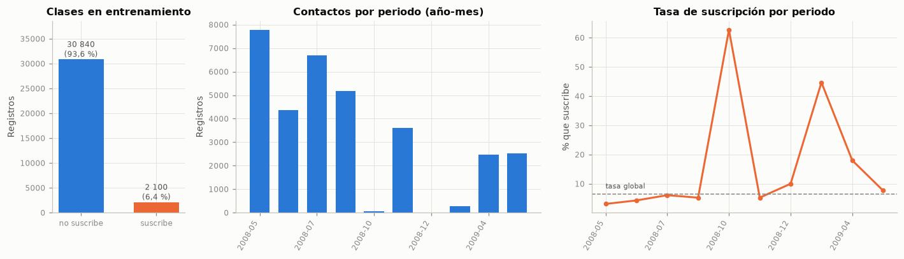
| Registros | % que suscribe | |
|---|---|---|
| Año reconstruido | ||
| 2008 | 27 682 | 4,8 |
| 2009 | 5 258 | 14,5 |
Lectura. En entrenamiento suscribe el 6,38 % (2 100 casos de la clase minoritaria): hay 14,7 registros negativos por cada positivo. Un clasificador que siempre diga «no suscribe» acierta el 93,6 % de las veces. La tasa cambia mucho en el tiempo: va del 3,1 % en 2008-05 al 62,7 % en 2008-10 (un mes con solo 67 contactos en entrenamiento), y por año pasa del 4,8 % en 2008 al 14,5 % en el tramo de 2009 incluido en entrenamiento (hasta 2009-05). Los meses con más contactos son los de menor tasa (Spearman entre volumen y tasa por periodo = -0,84).
Implicación predictiva. El accuracy no sirve como métrica principal: un 93,6 % se logra sin aprender nada. Además, la prevalencia de la clase positiva depende del periodo, de modo que cualquier variable que identifique el periodo tendrá poder predictivo aparente y el desempeño en campañas futuras dependerá de la tasa base de ese futuro.
Acción recomendada. Evaluar con AUC, AUC-PR (precisión promedio), recall, F1 y calibración; validar con el esquema temporal, que respeta la deriva de la prevalencia, y cuantificar en la sección 3.6 cuánto inflaría el resultado una validación aleatoria.
3.2 Análisis unidimensional (enunciado, sección 2.2)#
3.2.1 Variables numéricas#
Para cada variable se reportan el número de valores distintos, los estadísticos de posición y dispersión, la asimetría, la curtosis (exceso sobre la normal), la prueba de normalidad de D’Agostino-Pearson y la proporción de atípicos según el IQR. pdays se resume con todos sus valores, incluido el código 999, y en el histograma se muestra sin el código.
filas_uni = []
for c in NUMERICAS:
s = tr[c].astype(float)
q1, q3 = s.quantile([0.25, 0.75])
iqr = q3 - q1
_, p_norm = stats.normaltest(s)
filas_uni.append({
"Variable": c, "Valores distintos": s.nunique(), "Media": s.mean(), "Mediana": s.median(),
"Desv. est.": s.std(), "Mín.": s.min(), "P5": s.quantile(0.05), "P25": q1, "P75": q3,
"P95": s.quantile(0.95), "Máx.": s.max(), "Asimetría": s.skew(), "Curtosis": s.kurt(),
"p normalidad": p_norm, "Atípicos IQR (%)": 100 * ((s < q1 - 1.5 * iqr) | (s > q3 + 1.5 * iqr)).mean()})
uni_num = pd.DataFrame(filas_uni).set_index("Variable")
tabla(uni_num, dec=2)
pd_real = tr.loc[tr["pdays"] != 999, "pdays"]
print(f"pdays sin el código 999: {num(len(pd_real))} registros ({pct(len(pd_real) / len(tr))}), "
f"mediana {num(pd_real.median())} días, máximo {num(pd_real.max())} días.")
fig, axs = plt.subplots(2, 5, figsize=(14, 6))
for ax, c in zip(axs.ravel(), NUMERICAS):
s = pd_real if c == "pdays" else tr[c]
ax.hist(s, bins=min(50, s.nunique()), color=AZUL, edgecolor=FONDO, linewidth=0.3)
ax.set_title(("pdays (sin 999)" if c == "pdays" else c) + f"\nasim. {num(s.skew(), 2)} · curt. {num(s.kurt(), 2)}",
fontsize=9)
ax.tick_params(axis="y", labelsize=7)
fig.suptitle("Distribución de las variables numéricas (entrenamiento)")
plt.tight_layout()
plt.show()
sesgadas = uni_num.index[uni_num["Asimetría"].abs() > 1].tolist()
pocos_valores = uni_num.index[uni_num["Valores distintos"] <= 30].tolist()
macro_pocos = [c for c in MACRO if c in pocos_valores]
interpretar(
f"Las variables con asimetría marcada (|asimetría| > 1) son {enumerar(sesgadas)}; "
f"`campaign` tiene asimetría {num(uni_num.loc['campaign', 'Asimetría'], 2)} y curtosis "
f"{num(uni_num.loc['campaign', 'Curtosis'], 1)}, con mediana {num(uni_num.loc['campaign', 'Mediana'])} y máximo "
f"{num(uni_num.loc['campaign', 'Máx.'])}. La edad es moderadamente asimétrica a la derecha (mediana "
f"{num(uni_num.loc['age', 'Mediana'])} años). Los indicadores macroeconómicos no son continuos en la práctica: "
+ enumerar([f"`{c}` toma {uni_num.loc[c, 'Valores distintos']} valores" for c in macro_pocos], codigo=False)
+ ", con distribuciones multimodales que corresponden a periodos distintos. La prueba de normalidad rechaza en "
f"las {int((uni_num['p normalidad'] < 0.05).sum())} variables (p < 0,05), algo esperable con n = {num(len(tr))}.",
"Las colas largas de los conteos (`campaign`, `previous`) dan palanca excesiva a pocos registros en un modelo "
"lineal. El rechazo de la normalidad no es un problema para la regresión logística, que no la supone en las "
"predictoras, pero confirma que conviene usar pruebas no paramétricas en el análisis bidimensional. Que las "
"macro tengan tan pocos valores indica que funcionan como etiquetas del periodo más que como medidas continuas.",
"Aplicar `log1p` a `campaign` y `previous` antes del escalado (sección 3.7) y usar Spearman, Mann-Whitney y "
"Kruskal-Wallis en la sección 3.3.")
| Valores distintos | Media | Mediana | Desv. est. | Mín. | P5 | P25 | P75 | P95 | Máx. | Asimetría | Curtosis | p normalidad | Atípicos IQR (%) | |
|---|---|---|---|---|---|---|---|---|---|---|---|---|---|---|
| Variable | ||||||||||||||
| age | 68 | 40,03 | 39,00 | 9,35 | 18,00 | 27,00 | 33,00 | 47,00 | 57,00 | 95,00 | 0,48 | -0,21 | 0,00 | 0,23 |
| duration | 1 482 | 255,99 | 175,00 | 261,26 | 0,00 | 38,00 | 100,00 | 314,00 | 757,00 | 4 918,00 | 3,32 | 20,86 | 0,00 | 7,48 |
| campaign | 42 | 2,67 | 2,00 | 2,97 | 1,00 | 1,00 | 1,00 | 3,00 | 7,00 | 56,00 | 4,65 | 33,91 | 0,00 | 6,51 |
| pdays | 14 | 993,75 | 999,00 | 72,03 | 0,00 | 999,00 | 999,00 | 999,00 | 999,00 | 999,00 | -13,65 | 184,35 | 0,00 | 0,53 |
| previous | 4 | 0,07 | 0,00 | 0,27 | 0,00 | 0,00 | 0,00 | 0,00 | 1,00 | 3,00 | 3,87 | 15,51 | 0,00 | 6,91 |
| emp.var.rate | 5 | 0,65 | 1,10 | 1,16 | -1,80 | -1,80 | -0,10 | 1,40 | 1,40 | 1,40 | -1,39 | 0,29 | 0,00 | 0,00 |
| cons.price.idx | 10 | 93,70 | 93,92 | 0,48 | 92,76 | 92,89 | 93,20 | 93,99 | 94,47 | 94,47 | -0,14 | -1,05 | 0,00 | 0,00 |
| cons.conf.idx | 10 | -40,64 | -41,80 | 3,87 | -50,00 | -47,10 | -42,70 | -36,40 | -36,10 | -36,10 | -0,17 | -1,14 | 0,00 | 0,00 |
| euribor3m | 106 | 4,27 | 4,86 | 1,28 | 1,30 | 1,33 | 4,19 | 4,96 | 4,97 | 5,04 | -1,72 | 1,15 | 0,00 | 15,96 |
| nr.employed | 5 | 5 195,14 | 5 195,80 | 44,85 | 5 099,10 | 5 099,10 | 5 191,00 | 5 228,10 | 5 228,10 | 5 228,10 | -1,37 | 0,50 | 0,00 | 15,96 |
pdays sin el código 999: 174 registros (0,5 %), mediana 5 días, máximo 12 días.
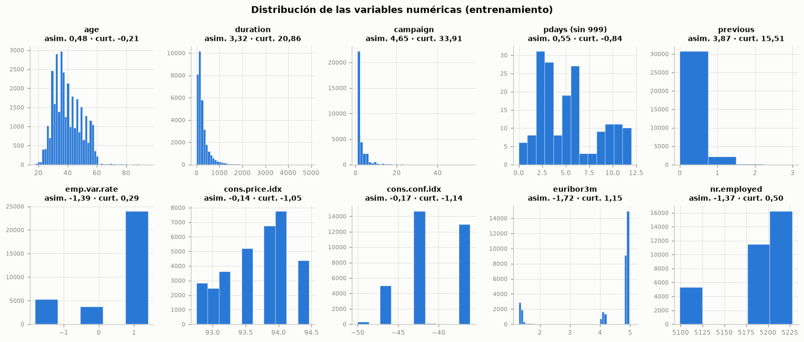
Lectura. Las variables con asimetría marcada (|asimetría| > 1) son duration, campaign, pdays, previous, emp.var.rate, euribor3m y nr.employed; campaign tiene asimetría 4,65 y curtosis 33,9, con mediana 2 y máximo 56. La edad es moderadamente asimétrica a la derecha (mediana 39 años). Los indicadores macroeconómicos no son continuos en la práctica: emp.var.rate toma 5 valores, cons.price.idx toma 10 valores, cons.conf.idx toma 10 valores y nr.employed toma 5 valores, con distribuciones multimodales que corresponden a periodos distintos. La prueba de normalidad rechaza en las 10 variables (p < 0,05), algo esperable con n = 32 940.
Implicación predictiva. Las colas largas de los conteos (campaign, previous) dan palanca excesiva a pocos registros en un modelo lineal. El rechazo de la normalidad no es un problema para la regresión logística, que no la supone en las predictoras, pero confirma que conviene usar pruebas no paramétricas en el análisis bidimensional. Que las macro tengan tan pocos valores indica que funcionan como etiquetas del periodo más que como medidas continuas.
Acción recomendada. Aplicar log1p a campaign y previous antes del escalado (sección 3.7) y usar Spearman, Mann-Whitney y Kruskal-Wallis en la sección 3.3.
transformadas = pd.DataFrame({
"Asimetría original": [tr[c].skew() for c in ["campaign", "previous", "duration"]],
"Asimetría con log1p": [np.log1p(tr[c]).skew() for c in ["campaign", "previous", "duration"]],
"Curtosis original": [tr[c].kurt() for c in ["campaign", "previous", "duration"]],
"Curtosis con log1p": [np.log1p(tr[c]).kurt() for c in ["campaign", "previous", "duration"]]},
index=["campaign", "previous", "duration"])
tabla(transformadas, dec=2)
fig, axs = plt.subplots(2, 5, figsize=(14, 4.2))
for ax, c in zip(axs.ravel(), NUMERICAS):
s = pd_real if c == "pdays" else tr[c]
ax.boxplot(s, orientation="horizontal", widths=0.55, patch_artist=True,
boxprops={"facecolor": "#cde2fb", "edgecolor": AZUL}, medianprops={"color": NARANJA, "lw": 2},
whiskerprops={"color": AZUL}, capprops={"color": AZUL},
flierprops={"marker": "o", "markersize": 2.5, "markerfacecolor": GRIS, "markeredgecolor": "none",
"alpha": 0.4})
ax.set_yticks([])
ax.set_title("pdays (sin 999)" if c == "pdays" else c, fontsize=9.5)
ax.text(0.98, 0.9, f"atípicos {num(uni_num.loc[c, 'Atípicos IQR (%)'], 1)} %", transform=ax.transAxes,
ha="right", fontsize=7.5, color=TINTA_2)
fig.suptitle("Diagramas de caja y atípicos según el IQR (entrenamiento)")
plt.tight_layout()
plt.show()
interpretar(
f"`log1p` reduce la asimetría de `campaign` de {num(transformadas.loc['campaign', 'Asimetría original'], 2)} a "
f"{num(transformadas.loc['campaign', 'Asimetría con log1p'], 2)} y la de `previous` de "
f"{num(transformadas.loc['previous', 'Asimetría original'], 2)} a "
f"{num(transformadas.loc['previous', 'Asimetría con log1p'], 2)}. Los diagramas de caja muestran atípicos "
f"sobre todo en `previous` ({num(uni_num.loc['previous', 'Atípicos IQR (%)'], 1)} %), `duration` "
f"({num(uni_num.loc['duration', 'Atípicos IQR (%)'], 1)} %) y `campaign` "
f"({num(uni_num.loc['campaign', 'Atípicos IQR (%)'], 1)} %); en las macro "
+ ("no hay atípicos univariados." if not [c for c in MACRO if uni_num.loc[c, "Atípicos IQR (%)"] > 0] else
"solo " + enumerar([c for c in MACRO if uni_num.loc[c, "Atípicos IQR (%)"] > 0]) + " tiene atípicos univariados."),
"Los atípicos son valores legítimos de la cola (clientes muy contactados o con historial), no errores de "
"medición, así que su eliminación sesgaría la muestra. La transformación logarítmica reduce su palanca sin "
"perder registros.",
"Conservar todos los registros y tratar los atípicos con `log1p` en `campaign` y `previous` dentro del "
"`Pipeline`; `duration` no se transforma porque queda excluida por fuga (sección 3.5).")
| Asimetría original | Asimetría con log1p | Curtosis original | Curtosis con log1p | |
|---|---|---|---|---|
| campaign | 4,65 | 1,36 | 33,91 | 2,05 |
| previous | 3,87 | 3,54 | 15,51 | 11,18 |
| duration | 3,32 | -0,30 | 20,86 | 0,66 |
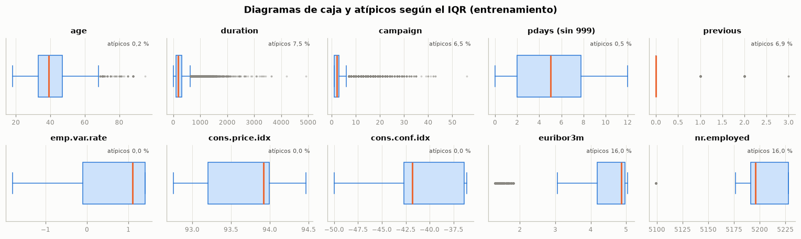
Lectura. log1p reduce la asimetría de campaign de 4,65 a 1,36 y la de previous de 3,87 a 3,54. Los diagramas de caja muestran atípicos sobre todo en previous (6,9 %), duration (7,5 %) y campaign (6,5 %); en las macro solo euribor3m y nr.employed tiene atípicos univariados.
Implicación predictiva. Los atípicos son valores legítimos de la cola (clientes muy contactados o con historial), no errores de medición, así que su eliminación sesgaría la muestra. La transformación logarítmica reduce su palanca sin perder registros.
Acción recomendada. Conservar todos los registros y tratar los atípicos con log1p en campaign y previous dentro del Pipeline; duration no se transforma porque queda excluida por fuga (sección 3.5).
3.2.2 Variables categóricas#
Se reportan la cardinalidad, la moda, el porcentaje de unknown y las categorías raras (menos del 1 % de los registros), con la frecuencia de cada categoría y su gráfico de barras.
ORDEN_CAT = {"month": [m for m in ORDEN_MESES if m in tr["month"].unique()],
"day_of_week": ["mon", "tue", "wed", "thu", "fri"]}
filas_cat, frecuencias = [], []
for c in CATEGORICAS:
vc = tr[c].value_counts()
raras = vc[vc / len(tr) < 0.01]
filas_cat.append({"Variable": c, "Cardinalidad": tr[c].nunique(), "Moda": vc.index[0],
"% moda": 100 * vc.iloc[0] / len(tr), "% unknown": 100 * (tr[c] == "unknown").mean(),
"Categorías raras (menos del 1 %)": ", ".join(f"{k} ({v})" for k, v in raras.items()) or "—"})
for k, v in vc.items():
frecuencias.append({"Variable": c, "Categoría": k, "Registros": v, "%": 100 * v / len(tr)})
uni_cat = pd.DataFrame(filas_cat).set_index("Variable")
tabla(uni_cat, dec=2)
fig, axs = plt.subplots(2, 5, figsize=(14, 6.6))
for ax, c in zip(axs.ravel(), CATEGORICAS):
vc = tr[c].value_counts(normalize=True)
vc = vc.reindex(ORDEN_CAT[c]) if c in ORDEN_CAT else vc.sort_values()
colores = [GRIS if k == "unknown" else AZUL for k in vc.index]
ax.barh(vc.index.astype(str), 100 * vc.values, color=colores, height=0.65)
ax.set_title(c, fontsize=9.5)
ax.set_xlabel("% de registros", fontsize=8)
ax.tick_params(axis="y", labelsize=7.5)
if c in ORDEN_CAT:
ax.invert_yaxis()
fig.suptitle("Frecuencia de las categorías (entrenamiento; unknown en gris)")
plt.tight_layout()
plt.show()
frec = pd.DataFrame(frecuencias)
tabla(frec, dec=2, indice=False)
MIN_FREQ = 0.005 # umbral de categoría rara para el codificador (sección 3.7)
muy_raras = frec[frec["%"] < 100 * MIN_FREQ]
interpretar(
f"Las cardinalidades van de {uni_cat['Cardinalidad'].min()} (`contact`) a {uni_cat['Cardinalidad'].max()} "
f"(`job`). Varias variables están dominadas por una categoría: `poutcome` = "
f"{uni_cat.loc['poutcome', 'Moda']} ({num(uni_cat.loc['poutcome', '% moda'], 1)} %), `loan` = "
f"{uni_cat.loc['loan', 'Moda']} ({num(uni_cat.loc['loan', '% moda'], 1)} %) y `default` = "
f"{uni_cat.loc['default', 'Moda']} ({num(uni_cat.loc['default', '% moda'], 1)} %). `month` concentra los contactos en "
f"{uni_cat.loc['month', 'Moda']} ({num(uni_cat.loc['month', '% moda'], 1)} %), mientras que `day_of_week` es "
f"casi uniforme. Hay {len(muy_raras)} categorías con menos del {pct(MIN_FREQ)} de los registros: "
+ ", ".join(f"`{r.Variable} = {r.Categoría}` ({r.Registros})" for r in muy_raras.itertuples()) + ".",
"Una categoría con muy pocos registros produce un coeficiente inestable y puede no aparecer en algún pliegue "
"de validación. Las variables dominadas por una sola categoría aportan información solo a través de la "
"minoría (por ejemplo, `poutcome = success`).",
f"Agrupar en el codificador las categorías con menos del {pct(MIN_FREQ)} de los registros de entrenamiento "
"como categoría \"infrecuente\" de su variable, lo que además protege contra categorías no vistas, y conservar "
"`unknown` como categoría propia (sección 1.6.2).")
| Cardinalidad | Moda | % moda | % unknown | Categorías raras (menos del 1 %) | |
|---|---|---|---|---|---|
| Variable | |||||
| job | 12 | admin. | 24,40 | 0,81 | unknown (266) |
| marital | 4 | married | 62,92 | 0,19 | unknown (62) |
| education | 8 | university.degree | 28,43 | 4,01 | illiterate (14) |
| default | 3 | no | 75,66 | 24,34 | yes (3) |
| housing | 3 | yes | 51,53 | 2,37 | — |
| loan | 3 | no | 82,39 | 2,37 | — |
| contact | 2 | cellular | 57,35 | 0,00 | — |
| month | 9 | may | 31,21 | 0,00 | mar (282), oct (67), dec (10) |
| day_of_week | 5 | thu | 21,25 | 0,00 | — |
| poutcome | 3 | nonexistent | 93,09 | 0,00 | success (168) |
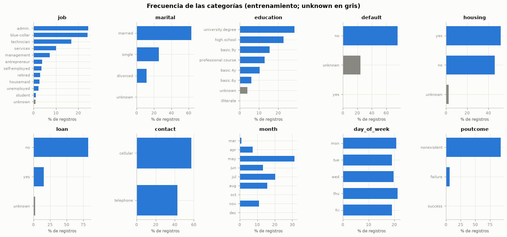
| Variable | Categoría | Registros | % |
|---|---|---|---|
| job | admin. | 8 038 | 24,40 |
| job | blue-collar | 7 958 | 24,16 |
| job | technician | 5 573 | 16,92 |
| job | services | 3 323 | 10,09 |
| job | management | 2 400 | 7,29 |
| job | entrepreneur | 1 261 | 3,83 |
| job | self-employed | 1 156 | 3,51 |
| job | retired | 989 | 3,00 |
| job | housemaid | 880 | 2,67 |
| job | unemployed | 749 | 2,27 |
| job | student | 347 | 1,05 |
| job | unknown | 266 | 0,81 |
| marital | married | 20 727 | 62,92 |
| marital | single | 8 384 | 25,45 |
| marital | divorced | 3 767 | 11,44 |
| marital | unknown | 62 | 0,19 |
| education | university.degree | 9 364 | 28,43 |
| education | high.school | 7 509 | 22,80 |
| education | basic.9y | 5 094 | 15,46 |
| education | professional.course | 4 241 | 12,87 |
| education | basic.4y | 3 432 | 10,42 |
| education | basic.6y | 1 965 | 5,97 |
| education | unknown | 1 321 | 4,01 |
| education | illiterate | 14 | 0,04 |
| default | no | 24 921 | 75,66 |
| default | unknown | 8 016 | 24,34 |
| default | yes | 3 | 0,01 |
| housing | yes | 16 973 | 51,53 |
| housing | no | 15 186 | 46,10 |
| housing | unknown | 781 | 2,37 |
| loan | no | 27 138 | 82,39 |
| loan | yes | 5 021 | 15,24 |
| loan | unknown | 781 | 2,37 |
| contact | cellular | 18 891 | 57,35 |
| contact | telephone | 14 049 | 42,65 |
| month | may | 10 281 | 31,21 |
| month | jul | 6 681 | 20,28 |
| month | aug | 5 173 | 15,70 |
| month | jun | 4 374 | 13,28 |
| month | nov | 3 615 | 10,97 |
| month | apr | 2 457 | 7,46 |
| month | mar | 282 | 0,86 |
| month | oct | 67 | 0,20 |
| month | dec | 10 | 0,03 |
| day_of_week | thu | 7 000 | 21,25 |
| day_of_week | mon | 6 831 | 20,74 |
| day_of_week | wed | 6 518 | 19,79 |
| day_of_week | tue | 6 307 | 19,15 |
| day_of_week | fri | 6 284 | 19,08 |
| poutcome | nonexistent | 30 665 | 93,09 |
| poutcome | failure | 2 107 | 6,40 |
| poutcome | success | 168 | 0,51 |
Lectura. Las cardinalidades van de 2 (contact) a 12 (job). Varias variables están dominadas por una categoría: poutcome = nonexistent (93,1 %), loan = no (82,4 %) y default = no (75,7 %). month concentra los contactos en may (31,2 %), mientras que day_of_week es casi uniforme. Hay 5 categorías con menos del 0,5 % de los registros: marital = unknown (62), education = illiterate (14), default = yes (3), month = oct (67), month = dec (10).
Implicación predictiva. Una categoría con muy pocos registros produce un coeficiente inestable y puede no aparecer en algún pliegue de validación. Las variables dominadas por una sola categoría aportan información solo a través de la minoría (por ejemplo, poutcome = success).
Acción recomendada. Agrupar en el codificador las categorías con menos del 0,5 % de los registros de entrenamiento como categoría «infrecuente» de su variable, lo que además protege contra categorías no vistas, y conservar unknown como categoría propia (sección 1.6.2).
3.3 Análisis bidimensional (enunciado, sección 2.3)#
3.3.1 Numéricas frente a numéricas#
Se calculan las correlaciones de Pearson (lineal) y Spearman (monótona) para los 45 pares de variables numéricas, con valores p de Spearman ajustados por Holm. Los diagramas hexbin reemplazan al diagrama de dispersión porque, con más de 30 000 puntos, la superposición ocultaría la densidad.
pares = []
for i, a in enumerate(NUMERICAS):
for b in NUMERICAS[i + 1:]:
sp = stats.spearmanr(tr[a], tr[b])
pares.append({"Variable 1": a, "Variable 2": b, "Pearson": tr[a].corr(tr[b]), "Spearman": sp.statistic,
"p Spearman": sp.pvalue})
pares = pd.DataFrame(pares)
pares["p Spearman (Holm)"] = multipletests(pares["p Spearman"], method="holm")[1]
pares["|Spearman|"] = pares["Spearman"].abs()
pares = pares.sort_values("|Spearman|", ascending=False)
tabla(pares.drop(columns=["|Spearman|", "p Spearman"]).head(12), dec=3, indice=False)
fig, axs = plt.subplots(1, 3, figsize=(13.5, 3.9))
for ax, (a, b) in zip(axs, [("euribor3m", "nr.employed"), ("emp.var.rate", "cons.price.idx"), ("age", "campaign")]):
hb = ax.hexbin(tr[a], tr[b], gridsize=35, bins="log", cmap=CMAP_SEQ, mincnt=1, linewidths=0.2)
r_p, r_s = tr[a].corr(tr[b]), tr[a].corr(tr[b], method="spearman")
ax.set_title(f"{b} frente a {a}\nPearson {num(r_p, 2)} · Spearman {num(r_s, 2)}", fontsize=9.5)
ax.set_xlabel(a)
ax.set_ylabel(b)
ax.grid(False)
fig.colorbar(hb, ax=ax, label="registros (escala log)")
plt.tight_layout()
plt.show()
fuertes = pares[pares["|Spearman|"] >= 0.7]
dif_lin = pares.assign(dif=(pares["Spearman"] - pares["Pearson"]).abs()).sort_values("dif", ascending=False).iloc[0]
interpretar(
f"{len(fuertes)} pares tienen |Spearman| ≥ 0,7, todos entre indicadores macroeconómicos: "
+ "; ".join(f"`{r['Variable 1']}`–`{r['Variable 2']}` ({num(r['Spearman'], 2)})" for _, r in fuertes.iterrows())
+ f". Los *hexbin* muestran que esas relaciones se forman con pocas combinaciones de valores (una por periodo). "
f"La mayor diferencia entre Spearman y Pearson aparece en `{dif_lin['Variable 1']}`–`{dif_lin['Variable 2']}` "
f"({num(dif_lin['Spearman'], 2)} frente a {num(dif_lin['Pearson'], 2)}), "
+ ("señal de relación monótona no lineal. " if abs(dif_lin["Spearman"]) > abs(dif_lin["Pearson"]) else
"señal de que la asociación lineal depende de unos pocos grupos de valores (los periodos) más que de una "
"relación monótona. ")
+ ""
f"La edad y el número de contactos de la campaña no están relacionados (Spearman "
f"{num(tr['age'].corr(tr['campaign'], method='spearman'), 2)}).",
"Las macro miden casi lo mismo (el ciclo económico del periodo), así que en un modelo lineal se reparten el "
"efecto y sus coeficientes individuales se vuelven inestables y difíciles de interpretar.",
"Cuantificar la multicolinealidad con el VIF (sección 3.3.5) y eliminar las variables redundantes antes del "
"modelo base.")
| Variable 1 | Variable 2 | Pearson | Spearman | p Spearman (Holm) |
|---|---|---|---|---|
| emp.var.rate | nr.employed | 0,946 | 0,936 | 0,000 |
| emp.var.rate | euribor3m | 0,978 | 0,925 | 0,000 |
| euribor3m | nr.employed | 0,952 | 0,869 | 0,000 |
| emp.var.rate | cons.price.idx | 0,780 | 0,535 | 0,000 |
| cons.conf.idx | euribor3m | 0,716 | 0,487 | 0,000 |
| cons.price.idx | cons.conf.idx | 0,372 | 0,428 | 0,000 |
| emp.var.rate | cons.conf.idx | 0,688 | 0,403 | 0,000 |
| previous | emp.var.rate | -0,441 | -0,383 | 0,000 |
| cons.price.idx | euribor3m | 0,735 | 0,372 | 0,000 |
| previous | cons.price.idx | -0,366 | -0,361 | 0,000 |
| previous | euribor3m | -0,426 | -0,360 | 0,000 |
| cons.price.idx | nr.employed | 0,662 | 0,352 | 0,000 |
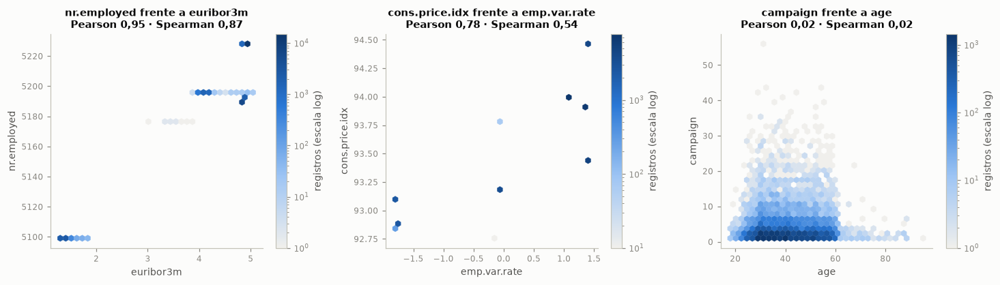
Lectura. 3 pares tienen |Spearman| ≥ 0,7, todos entre indicadores macroeconómicos: emp.var.rate–nr.employed (0,94); emp.var.rate–euribor3m (0,93); euribor3m–nr.employed (0,87). Los hexbin muestran que esas relaciones se forman con pocas combinaciones de valores (una por periodo). La mayor diferencia entre Spearman y Pearson aparece en cons.price.idx–euribor3m (0,37 frente a 0,74), señal de que la asociación lineal depende de unos pocos grupos de valores (los periodos) más que de una relación monótona. La edad y el número de contactos de la campaña no están relacionados (Spearman 0,02).
Implicación predictiva. Las macro miden casi lo mismo (el ciclo económico del periodo), así que en un modelo lineal se reparten el efecto y sus coeficientes individuales se vuelven inestables y difíciles de interpretar.
Acción recomendada. Cuantificar la multicolinealidad con el VIF (sección 3.3.5) y eliminar las variables redundantes antes del modelo base.
3.3.2 Categóricas frente a numéricas#
Para cada par categórica-numérica se aplica Kruskal-Wallis (alternativa no paramétrica al ANOVA, adecuada porque la normalidad se rechazó en la sección 3.2.1). El tamaño de efecto es \(\varepsilon^2 = H/(n-1)\), que se lee como la proporción de la variabilidad de los rangos explicada por la categoría (guía orientativa: 0,01 pequeño, 0,06 mediano, 0,14 grande).
eps2 = pd.DataFrame(index=CATEGORICAS, columns=NUMERICAS, dtype=float)
pvals_kw = []
for c in CATEGORICAS:
for v in NUMERICAS:
muestras = [tr.loc[tr[c] == k, v].to_numpy() for k in tr[c].unique()]
h, p = stats.kruskal(*muestras)
eps2.loc[c, v] = h / (len(tr) - 1)
pvals_kw.append({"Categórica": c, "Numérica": v, "H": h, "p": p, "ε²": h / (len(tr) - 1)})
kw = pd.DataFrame(pvals_kw)
kw["p (Holm)"] = multipletests(kw["p"], method="holm")[1]
n_sig_kw = int((kw["p (Holm)"] < 0.05).sum())
fig, ax = plt.subplots(figsize=(10, 5))
im = mapa_calor(ax, eps2.to_numpy(), CATEGORICAS, NUMERICAS, CMAP_SEQ, 0, max(0.3, eps2.max().max()), dec=2)
fig.colorbar(im, ax=ax, label="ε² de Kruskal-Wallis")
ax.set_title("Tamaño de efecto categórica–numérica (ε²)")
plt.tight_layout()
plt.show()
fig, axs = plt.subplots(1, 2, figsize=(13.5, 4.2))
orden_job = tr.groupby("job")["age"].median().sort_values().index
axs[0].boxplot([tr.loc[tr["job"] == k, "age"] for k in orden_job], tick_labels=orden_job, showfliers=False,
patch_artist=True, boxprops={"facecolor": "#cde2fb", "edgecolor": AZUL},
medianprops={"color": NARANJA, "lw": 2}, whiskerprops={"color": AZUL}, capprops={"color": AZUL})
axs[0].tick_params(axis="x", rotation=45)
axs[0].set_ylabel("Edad (años)")
axs[0].set_title(f"age por job · ε² = {num(eps2.loc['job', 'age'], 3)}")
meses = ORDEN_CAT["month"]
axs[1].boxplot([tr.loc[tr["month"] == m, "euribor3m"] for m in meses], tick_labels=meses, showfliers=False,
patch_artist=True, boxprops={"facecolor": "#cde2fb", "edgecolor": AZUL},
medianprops={"color": NARANJA, "lw": 2}, whiskerprops={"color": AZUL}, capprops={"color": AZUL})
axs[1].set_ylabel("euribor3m (%)")
axs[1].set_title(f"euribor3m por month · ε² = {num(eps2.loc['month', 'euribor3m'], 3)}")
plt.tight_layout()
plt.show()
top_kw = kw.sort_values("ε²", ascending=False).head(6)
interpretar(
f"{n_sig_kw} de los {len(kw)} pares resultan significativos tras Holm, pero solo "
f"{int((kw['ε²'] >= 0.06).sum())} alcanzan un efecto al menos mediano (ε² ≥ 0,06). Los mayores son "
+ "; ".join(f"`{r['Categórica']}`–`{r['Numérica']}` ({num(r['ε²'], 3)})" for _, r in top_kw.iterrows())
+ f". Los dos primeros son estructurales: `poutcome = nonexistent` ocurre exactamente cuando `previous = 0` "
f"(sección 1.6.4). La edad varía con el estado civil (ε² = {num(eps2.loc['marital', 'age'], 3)}) y con la "
f"ocupación (ε² = {num(eps2.loc['job', 'age'], 3)}): la mediana más baja es la de "
f"`{orden_job[0]}` ({num(tr.loc[tr['job'] == orden_job[0], 'age'].median())} años) y la más alta la de "
f"`{orden_job[-1]}` ({num(tr.loc[tr['job'] == orden_job[-1], 'age'].median())} años); y la Euribor cambia con el "
"mes porque el mes, junto con el orden del archivo, marca el periodo.",
"La alta significancia con efectos pequeños confirma que, con este n, el valor p no basta para seleccionar "
"variables. Las asociaciones fuertes entre `month`, `contact`, `poutcome` y las macro indican que varias "
"predictoras comparten la misma información del periodo y del historial.",
"Usar el tamaño de efecto, no el valor p, en la selección preliminar (sección 3.3.6) y tener presente que "
"`month` y las macro son, en parte, sustitutos entre sí.")
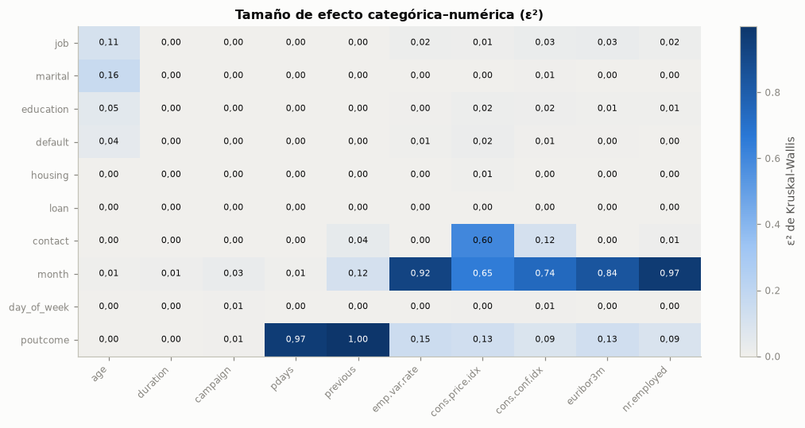
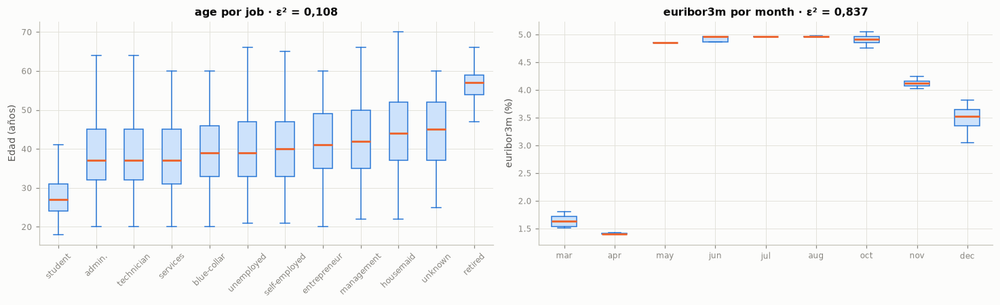
Lectura. 72 de los 100 pares resultan significativos tras Holm, pero solo 17 alcanzan un efecto al menos mediano (ε² ≥ 0,06). Los mayores son poutcome–previous (1,000); month–nr.employed (0,969); poutcome–pdays (0,966); month–emp.var.rate (0,923); month–euribor3m (0,837); month–cons.conf.idx (0,740). Los dos primeros son estructurales: poutcome = nonexistent ocurre exactamente cuando previous = 0 (sección 1.6.4). La edad varía con el estado civil (ε² = 0,163) y con la ocupación (ε² = 0,108): la mediana más baja es la de student (27 años) y la más alta la de retired (57 años); y la Euribor cambia con el mes porque el mes, junto con el orden del archivo, marca el periodo.
Implicación predictiva. La alta significancia con efectos pequeños confirma que, con este n, el valor p no basta para seleccionar variables. Las asociaciones fuertes entre month, contact, poutcome y las macro indican que varias predictoras comparten la misma información del periodo y del historial.
Acción recomendada. Usar el tamaño de efecto, no el valor p, en la selección preliminar (sección 3.3.6) y tener presente que month y las macro son, en parte, sustitutos entre sí.
3.3.3 Categóricas frente a categóricas#
Para cada par de categóricas (incluida la variable objetivo) se construye la tabla de contingencia, se aplica la prueba χ² y se calcula la V de Cramér como tamaño de efecto (guía orientativa: 0,1 pequeña, 0,3 mediana, 0,5 grande), con ajuste de Holm.
CAT_Y = CATEGORICAS + ["y"]
tr_cat = tr[CATEGORICAS].assign(y=tr["y"].map({0: "no", 1: "yes"}))
V = pd.DataFrame(np.nan, index=CAT_Y, columns=CAT_Y)
pruebas_cc = []
for i, a in enumerate(CAT_Y):
for b in CAT_Y[i + 1:]:
v, chi2, p = v_cramer(pd.crosstab(tr_cat[a], tr_cat[b]))
V.loc[b, a] = v
pruebas_cc.append({"Variable 1": a, "Variable 2": b, "χ²": chi2, "p": p, "V de Cramér": v})
cc = pd.DataFrame(pruebas_cc)
cc["p (Holm)"] = multipletests(cc["p"], method="holm")[1]
fig, ax = plt.subplots(figsize=(8.5, 6.5))
im = mapa_calor(ax, V.to_numpy(), CAT_Y, CAT_Y, CMAP_SEQ, 0, 1, dec=2)
fig.colorbar(im, ax=ax, label="V de Cramér")
ax.set_title("Asociación entre categóricas (V de Cramér, triángulo inferior)")
plt.tight_layout()
plt.show()
print("Tabla de contingencia housing × loan (entrenamiento):")
display(pd.crosstab(tr["housing"], tr["loan"], margins=True, margins_name="Total"))
top_cc = cc[(cc["Variable 1"] != "y") & (cc["Variable 2"] != "y")].sort_values("V de Cramér", ascending=False).head(5)
cc_y = cc[(cc["Variable 2"] == "y")].sort_values("V de Cramér", ascending=False)
hl = cc[(cc["Variable 1"] == "housing") & (cc["Variable 2"] == "loan")].iloc[0]
interpretar(
f"Los pares de predictoras más asociados son "
+ "; ".join(f"`{r['Variable 1']}`–`{r['Variable 2']}` (V = {num(r['V de Cramér'], 2)})" for _, r in top_cc.iterrows())
+ f". La V entre `housing` y `loan` ({num(hl['V de Cramér'], 2)}) se explica por la tabla de contingencia: "
f"las dos son `unknown` exactamente en los mismos {num(int((tr['housing'] == 'unknown').sum()))} registros. "
f"Frente a la objetivo, las mayores asociaciones son "
+ ", ".join(f"`{r['Variable 1']}` ({num(r['V de Cramér'], 2)})" for _, r in cc_y.head(4).iterrows()) + ".",
(f"La asociación `month`–`contact` (V = {num(V.loc['month', 'contact'], 2)}) y `month`–`poutcome` "
f"(V = {num(V.loc['poutcome', 'month'], 2)}) refleja la estructura temporal: los canales y el historial cambian "
"según el periodo de la campaña. ")
+ "`housing = unknown` y `loan = unknown` son la misma información duplicada.",
"Mantener ambas variables (el resto de sus categorías sí difiere), sabiendo que sus indicadores de `unknown` "
"son colineales; la regularización L2 del modelo base reparte ese efecto de forma estable.")
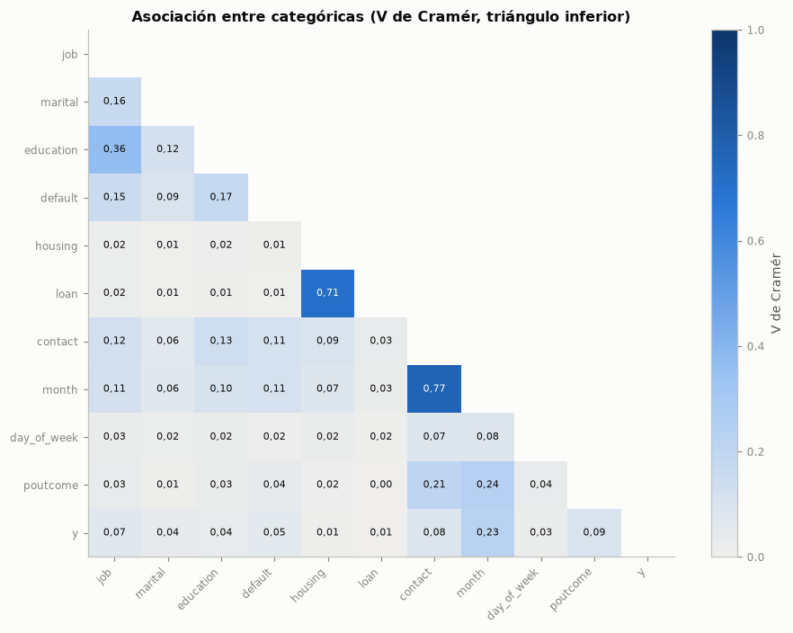
Tabla de contingencia housing × loan (entrenamiento):
| loan | no | unknown | yes | Total |
|---|---|---|---|---|
| housing | ||||
| no | 13083 | 0 | 2103 | 15186 |
| unknown | 0 | 781 | 0 | 781 |
| yes | 14055 | 0 | 2918 | 16973 |
| Total | 27138 | 781 | 5021 | 32940 |
Lectura. Los pares de predictoras más asociados son contact–month (V = 0,77); housing–loan (V = 0,71); job–education (V = 0,36); month–poutcome (V = 0,24); contact–poutcome (V = 0,21). La V entre housing y loan (0,71) se explica por la tabla de contingencia: las dos son unknown exactamente en los mismos 781 registros. Frente a la objetivo, las mayores asociaciones son month (0,23), poutcome (0,09), contact (0,08), job (0,07).
Implicación predictiva. La asociación month–contact (V = 0,77) y month–poutcome (V = 0,24) refleja la estructura temporal: los canales y el historial cambian según el periodo de la campaña. housing = unknown y loan = unknown son la misma información duplicada.
Acción recomendada. Mantener ambas variables (el resto de sus categorías sí difiere), sabiendo que sus indicadores de unknown son colineales; la regularización L2 del modelo base reparte ese efecto de forma estable.
3.3.4 Predictoras frente a la variable objetivo#
Numéricas: prueba de Mann-Whitney entre quienes suscriben y quienes no; tamaño de efecto con la correlación biserial de rangos \(r = 2\,\mathrm{AUC} - 1\) (positiva si los valores son mayores entre quienes suscriben; guía orientativa: 0,1 pequeño, 0,3 mediano, 0,5 grande).
Categóricas: χ² y V de Cramér.
Todas: información mutua (no paramétrica, capta relaciones no lineales), estimada con
random_state = SEED.
Los valores p de las 20 pruebas se ajustan por Holm y por FDR (Benjamini-Hochberg).
asoc = []
for c in NUMERICAS:
pos, neg = tr.loc[tr["y"] == 1, c], tr.loc[tr["y"] == 0, c]
u, p = stats.mannwhitneyu(pos, neg)
asoc.append({"Variable": c, "Tipo": "numérica", "Prueba": "Mann-Whitney", "Estadístico": u, "p": p,
"Efecto": 2 * u / (len(pos) * len(neg)) - 1, "Medida de efecto": "r biserial de rangos"})
for c in CATEGORICAS:
v, chi2, p = v_cramer(pd.crosstab(tr[c], tr["y"]))
asoc.append({"Variable": c, "Tipo": "categórica", "Prueba": "χ²", "Estadístico": chi2, "p": p, "Efecto": v,
"Medida de efecto": "V de Cramér"})
asoc = pd.DataFrame(asoc).set_index("Variable")
asoc["p (Holm)"] = multipletests(asoc["p"], method="holm")[1]
asoc["p (FDR)"] = multipletests(asoc["p"], method="fdr_bh")[1]
X_im = tr[NUMERICAS + CATEGORICAS].copy()
for c in CATEGORICAS:
X_im[c] = X_im[c].astype("category").cat.codes
im_vals = mutual_info_classif(X_im, tr["y"], discrete_features=[c in CATEGORICAS for c in X_im.columns],
random_state=SEED)
asoc["Información mutua"] = pd.Series(im_vals, index=X_im.columns)
asoc = asoc.sort_values("Información mutua", ascending=False)
asoc["Rango IM"] = np.arange(1, len(asoc) + 1)
tabla(asoc.drop(columns="p"), dec=4)
fig, axs = plt.subplots(2, 5, figsize=(14, 5.4))
for ax, c in zip(axs.ravel(), NUMERICAS):
filtro = (tr["pdays"] != 999) if c == "pdays" else np.ones(len(tr), dtype=bool)
datos = [tr.loc[(tr["y"] == k) & filtro, c] for k in (0, 1)]
bp = ax.boxplot(datos, tick_labels=["no", "sí"], showfliers=False, patch_artist=True, widths=0.55,
medianprops={"color": TINTA, "lw": 1.5})
for caja, col in zip(bp["boxes"], [AZUL, NARANJA]):
caja.set_facecolor(col)
caja.set_alpha(0.75)
ax.set_title(("pdays (dibujo sin 999)" if c == "pdays" else c) + f"\nr = {num(asoc.loc[c, 'Efecto'], 2)}",
fontsize=9)
fig.suptitle("Numéricas según la variable objetivo (¿suscribe?; sin atípicos en el dibujo)")
plt.tight_layout()
plt.show()
| Tipo | Prueba | Estadístico | Efecto | Medida de efecto | p (Holm) | p (FDR) | Información mutua | Rango IM | |
|---|---|---|---|---|---|---|---|---|---|
| Variable | |||||||||
| duration | numérica | Mann-Whitney | 57 536 669,5000 | 0,7768 | r biserial de rangos | 0,0000 | 0,0000 | 0,0798 | 1 |
| euribor3m | numérica | Mann-Whitney | 27 191 391,0000 | -0,1603 | r biserial de rangos | 0,0000 | 0,0000 | 0,0226 | 2 |
| cons.conf.idx | numérica | Mann-Whitney | 23 509 204,5000 | -0,2740 | r biserial de rangos | 0,0000 | 0,0000 | 0,0155 | 3 |
| cons.price.idx | numérica | Mann-Whitney | 23 756 876,5000 | -0,2664 | r biserial de rangos | 0,0000 | 0,0000 | 0,0153 | 4 |
| month | categórica | χ² | 1 736,5959 | 0,2296 | V de Cramér | 0,0000 | 0,0000 | 0,0152 | 5 |
| emp.var.rate | numérica | Mann-Whitney | 26 028 976,0000 | -0,1962 | r biserial de rangos | 0,0000 | 0,0000 | 0,0130 | 6 |
| nr.employed | numérica | Mann-Whitney | 26 946 080,0000 | -0,1679 | r biserial de rangos | 0,0000 | 0,0000 | 0,0094 | 7 |
| pdays | numérica | Mann-Whitney | 31 477 195,0000 | -0,0279 | r biserial de rangos | 0,0000 | 0,0000 | 0,0067 | 8 |
| age | numérica | Mann-Whitney | 30 464 978,0000 | -0,0592 | r biserial de rangos | 0,0000 | 0,0000 | 0,0036 | 9 |
| contact | categórica | χ² | 208,5026 | 0,0796 | V de Cramér | 0,0000 | 0,0000 | 0,0033 | 10 |
| poutcome | categórica | χ² | 274,3687 | 0,0913 | V de Cramér | 0,0000 | 0,0000 | 0,0021 | 11 |
| campaign | numérica | Mann-Whitney | 30 674 831,0000 | -0,0527 | r biserial de rangos | 0,0001 | 0,0000 | 0,0021 | 12 |
| job | categórica | χ² | 144,3514 | 0,0662 | V de Cramér | 0,0000 | 0,0000 | 0,0018 | 13 |
| previous | numérica | Mann-Whitney | 33 098 496,0000 | 0,0221 | r biserial de rangos | 0,0004 | 0,0001 | 0,0017 | 14 |
| default | categórica | χ² | 74,5766 | 0,0476 | V de Cramér | 0,0000 | 0,0000 | 0,0012 | 15 |
| marital | categórica | χ² | 42,1048 | 0,0358 | V de Cramér | 0,0000 | 0,0000 | 0,0006 | 16 |
| education | categórica | χ² | 40,4619 | 0,0350 | V de Cramér | 0,0000 | 0,0000 | 0,0006 | 17 |
| day_of_week | categórica | χ² | 23,0712 | 0,0265 | V de Cramér | 0,0004 | 0,0001 | 0,0003 | 18 |
| housing | categórica | χ² | 5,6158 | 0,0131 | V de Cramér | 0,1207 | 0,0635 | 0,0001 | 19 |
| loan | categórica | χ² | 1,7071 | 0,0072 | V de Cramér | 0,4259 | 0,4259 | 0,0000 | 20 |
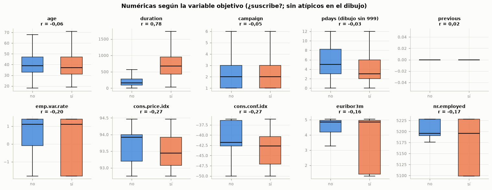
fig, axs = plt.subplots(2, 5, figsize=(14, 6.6))
tasa_global = 100 * tr["y"].mean()
for ax, c in zip(axs.ravel(), CATEGORICAS):
t = tr.groupby(c)["y"].mean() * 100
t = t.reindex(ORDEN_CAT[c]) if c in ORDEN_CAT else t.sort_values()
ax.barh(t.index.astype(str), t.values, color=[GRIS if k == "unknown" else NARANJA for k in t.index], height=0.65)
ax.axvline(tasa_global, color=TINTA_2, ls="--", lw=1)
ax.set_title(f"{c} · V = {num(asoc.loc[c, 'Efecto'], 2)}", fontsize=9.5)
ax.set_xlabel("% que suscribe", fontsize=8)
ax.tick_params(axis="y", labelsize=7.5)
if c in ORDEN_CAT:
ax.invert_yaxis()
fig.suptitle("Tasa de suscripción por categoría (línea: tasa global de entrenamiento)")
plt.tight_layout()
plt.show()
fig, ax = plt.subplots(figsize=(9, 5))
im_orden = asoc["Información mutua"].sort_values()
ax.barh(im_orden.index, im_orden.values, color=[GRIS if k == "duration" else AZUL for k in im_orden.index],
height=0.65)
ax.set_xlabel("Información mutua con y (nats)")
ax.set_title("Información mutua de cada predictora con la variable objetivo (duration en gris: fuga)")
plt.tight_layout()
plt.show()
num_ord = asoc[asoc["Tipo"] == "numérica"].sort_values("Efecto", key=np.abs, ascending=False)
cat_ord = asoc[asoc["Tipo"] == "categórica"].sort_values("Efecto", ascending=False)
no_sig = asoc.index[asoc["p (Holm)"] >= 0.05].tolist()
top_im = asoc.index[:6].tolist()
tasas_pout = tr.groupby("poutcome")["y"].mean()
tasa_edad = tr.groupby(pd.cut(tr["age"], [0, 24, 60, 120], labels=["<25", "25-60", ">60"]), observed=True)["y"].mean()
macro_neg = [c for c in ["euribor3m", "nr.employed", "emp.var.rate"] if asoc.loc[c, "Efecto"] < 0]
extremos = tasa_edad["<25"] > tasa_edad["25-60"] and tasa_edad[">60"] > tasa_edad["25-60"]
interpretar(
f"Entre las numéricas, el mayor efecto es el de `{num_ord.index[0]}` (r = {num(num_ord.iloc[0]['Efecto'], 2)}), "
f"seguido de `{num_ord.index[1]}` ({num(num_ord.iloc[1]['Efecto'], 2)}) y `{num_ord.index[2]}` "
f"({num(num_ord.iloc[2]['Efecto'], 2)}); "
+ (f"{enumerar(macro_neg)} tienen efectos negativos: se suscribe más cuando la Euribor y el "
"empleo son bajos. " if macro_neg else "")
+ f"Entre las categóricas destacan `{cat_ord.index[0]}` (V = {num(cat_ord.iloc[0]['Efecto'], 2)}) y "
f"`{cat_ord.index[1]}` ({num(cat_ord.iloc[1]['Efecto'], 2)}): con `poutcome = success` suscribe el "
f"{pct(tasas_pout['success'])}, frente al {pct(tasas_pout['nonexistent'])} sin campaña previa. Por información "
f"mutua, las seis primeras son {enumerar(top_im)}. "
+ (f"No son significativas tras Holm: {enumerar(no_sig)}; en el caso de la edad, la información mutua "
f"(rango {asoc.loc['age', 'Rango IM']}) sí detecta una relación, que no es monótona." if no_sig
else "Todas las asociaciones son significativas tras Holm."),
f"Sin `duration`, la mayor información mutua con `y` es la de {enumerar([c for c in asoc.index if c != 'duration'][:4])}, "
"que describen sobre todo el contexto del periodo; el historial con el banco y el canal aportan menos, y los "
"atributos del cliente, todavía menos. `duration` encabeza la lista, lo cual es una alerta de fuga más que una "
"buena noticia. "
+ (f"Las relaciones no son lineales en todos los casos: la tasa es del {pct(tasa_edad['<25'])} en menores de 25 "
f"años, del {pct(tasa_edad['25-60'])} entre 25 y 60 y del {pct(tasa_edad['>60'])} en mayores de 60, un patrón en "
"U que un término lineal en la edad no captura." if extremos else
"La tasa por edad no muestra un patrón en U marcado."),
"Conservar las predictoras con asociación no despreciable, excluir `duration` (sección 3.5) y documentar como "
"limitación del modelo base que los efectos no lineales quedan sin capturar.")
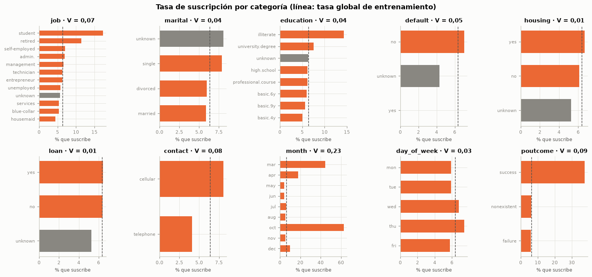
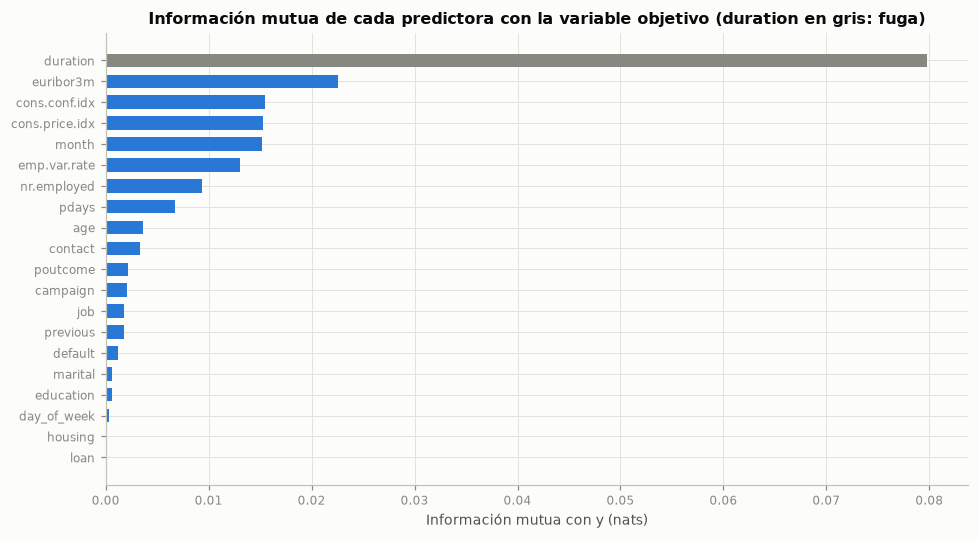
Lectura. Entre las numéricas, el mayor efecto es el de duration (r = 0,78), seguido de cons.conf.idx (-0,27) y cons.price.idx (-0,27); euribor3m, nr.employed y emp.var.rate tienen efectos negativos: se suscribe más cuando la Euribor y el empleo son bajos. Entre las categóricas destacan month (V = 0,23) y poutcome (0,09): con poutcome = success suscribe el 37,5 %, frente al 6,2 % sin campaña previa. Por información mutua, las seis primeras son duration, euribor3m, cons.conf.idx, cons.price.idx, month y emp.var.rate. No son significativas tras Holm: housing y loan; en el caso de la edad, la información mutua (rango 9) sí detecta una relación, que no es monótona.
Implicación predictiva. Sin duration, la mayor información mutua con y es la de euribor3m, cons.conf.idx, cons.price.idx y month, que describen sobre todo el contexto del periodo; el historial con el banco y el canal aportan menos, y los atributos del cliente, todavía menos. duration encabeza la lista, lo cual es una alerta de fuga más que una buena noticia. Las relaciones no son lineales en todos los casos: la tasa es del 12,9 % en menores de 25 años, del 6,1 % entre 25 y 60 y del 40,6 % en mayores de 60, un patrón en U que un término lineal en la edad no captura.
Acción recomendada. Conservar las predictoras con asociación no despreciable, excluir duration (sección 3.5) y documentar como limitación del modelo base que los efectos no lineales quedan sin capturar.
3.3.5 Matriz de correlación y multicolinealidad#
El mapa de calor usa Spearman (robusto a la asimetría) entre las numéricas y la variable objetivo. La multicolinealidad se mide con el factor de inflación de la varianza (VIF) de las numéricas candidatas a predictoras (sin duration; pdays entra como indicador de contacto previo para que el código 999 no distorsione el cálculo). Se aplica la regla habitual: mientras alguna variable tenga VIF > 10, se elimina la de mayor VIF y se recalcula.
cols_corr = NUMERICAS + ["y"]
R = tr[cols_corr].corr(method="spearman")
R_inf = R.where(np.tril(np.ones(R.shape, dtype=bool), k=-1))
fig, ax = plt.subplots(figsize=(8.5, 6.8))
im = mapa_calor(ax, R_inf.to_numpy(), cols_corr, cols_corr, CMAP_DIV, -1, 1, dec=2)
fig.colorbar(im, ax=ax, label="Spearman")
ax.set_title("Matriz de correlación de Spearman (triángulo inferior)")
plt.tight_layout()
plt.show()
def vif_tabla(datos):
Z = (datos - datos.mean()) / datos.std()
Z = Z.assign(constante=1.0)
return pd.Series([variance_inflation_factor(Z.to_numpy(), i) for i in range(Z.shape[1] - 1)],
index=datos.columns)
candidatas_vif = [c for c in NUMERICAS if c != "duration"]
base_vif = tr[candidatas_vif].astype(float).assign(pdays=(tr["pdays"] != 999).astype(float))
vif_inicial = vif_tabla(base_vif)
NUM_RETIRADAS_VIF, actuales = [], list(candidatas_vif)
while True:
v = vif_tabla(base_vif[actuales])
if v.max() <= 10:
break
NUM_RETIRADAS_VIF.append(v.idxmax())
actuales.remove(v.idxmax())
vif_final = vif_tabla(base_vif[actuales])
tabla(pd.DataFrame({"VIF inicial": vif_inicial, "VIF tras la eliminación": vif_final}), dec=2)
print("Retiradas por VIF > 10 (en orden):", NUM_RETIRADAS_VIF)
r_y = R["y"].drop("y").sort_values(key=np.abs, ascending=False)
interpretar(
f"Las correlaciones más altas con `y` son las de `{r_y.index[0]}` ({num(r_y.iloc[0], 2)}), `{r_y.index[1]}` "
f"({num(r_y.iloc[1], 2)}) y `{r_y.index[2]}` ({num(r_y.iloc[2], 2)}). El VIF inicial es de "
+ ", ".join(f"{num(vif_inicial[c], 1)} en `{c}`" for c in vif_inicial.sort_values(ascending=False).index[:3])
+ f". La eliminación iterativa retira {enumerar(NUM_RETIRADAS_VIF)} y deja todos los VIF por "
f"debajo de {num(vif_final.max(), 1)}.",
"Con VIF tan altos, los coeficientes de las macro tendrían varianzas infladas y signos poco confiables; la "
"información que se pierde al retirarlas es pequeña porque está contenida en las que quedan (por ejemplo, la "
f"correlación de Spearman entre `nr.employed` y `euribor3m` es {num(R.loc['nr.employed', 'euribor3m'], 2)}).",
f"Excluir {enumerar(NUM_RETIRADAS_VIF)} del modelo base y verificar con validación cruzada "
"que la pérdida de AUC sea despreciable (sección 3.7).")
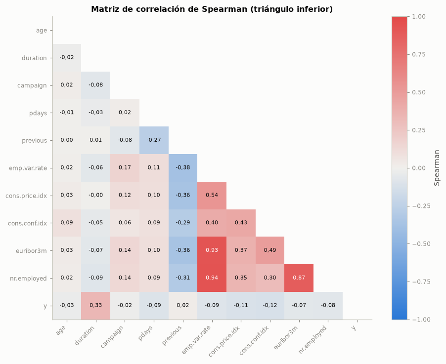
| VIF inicial | VIF tras la eliminación | |
|---|---|---|
| age | 1,01 | 1,01 |
| campaign | 1,03 | 1,03 |
| cons.conf.idx | 6,76 | 1,47 |
| cons.price.idx | 6,03 | 1,83 |
| emp.var.rate | 45,36 | — |
| euribor3m | 46,16 | — |
| nr.employed | 37,03 | 2,26 |
| pdays | 1,09 | 1,09 |
| previous | 1,34 | 1,32 |
Retiradas por VIF > 10 (en orden): ['euribor3m', 'emp.var.rate']
Lectura. Las correlaciones más altas con y son las de duration (0,33), cons.conf.idx (-0,12) y cons.price.idx (-0,11). El VIF inicial es de 46,2 en euribor3m, 45,4 en emp.var.rate, 37,0 en nr.employed. La eliminación iterativa retira euribor3m y emp.var.rate y deja todos los VIF por debajo de 2,3.
Implicación predictiva. Con VIF tan altos, los coeficientes de las macro tendrían varianzas infladas y signos poco confiables; la información que se pierde al retirarlas es pequeña porque está contenida en las que quedan (por ejemplo, la correlación de Spearman entre nr.employed y euribor3m es 0,87).
Acción recomendada. Excluir euribor3m y emp.var.rate del modelo base y verificar con validación cruzada que la pérdida de AUC sea despreciable (sección 3.7).
3.3.6 Selección preliminar de variables#
La tabla resume la decisión para cada predictora con su evidencia. La decisión definitiva sobre duration y sobre las variables en observación se toma en la auditoría de fuga (sección 3.5).
seleccion = []
for c in NUMERICAS + CATEGORICAS:
efecto = asoc.loc[c, "Efecto"]
if c == "duration":
dec, motivo = "Excluir", "Fuga: solo se conoce al terminar la llamada (sección 3.5)"
elif c in NUM_RETIRADAS_VIF:
dec, motivo = "Excluir", f"Redundante: VIF inicial {num(vif_inicial[c], 1)} (sección 3.3.5)"
elif c in MACRO or c in ("month", "campaign"):
dec, motivo = "Conservar, en observación", "Asociada con y, pero marca el periodo o depende del proceso de la campaña (sección 3.5)"
else:
dec, motivo = "Conservar", f"Asociación {magnitud(efecto, (0.1, 0.3, 0.5), ('despreciable', 'pequeña', 'mediana', 'grande'))} con y"
seleccion.append({"Variable": c, "Medida de efecto": asoc.loc[c, "Medida de efecto"], "Efecto": efecto,
"Rango IM": asoc.loc[c, "Rango IM"], "Decisión preliminar": dec, "Motivo": motivo})
seleccion = pd.DataFrame(seleccion).set_index("Variable").sort_values("Rango IM")
tabla(seleccion, dec=3)
conservadas = seleccion.index[seleccion["Decisión preliminar"].str.startswith("Conservar")].tolist()
debiles = [c for c in conservadas if abs(seleccion.loc[c, "Efecto"]) < 0.1]
interpretar(
f"Se conservan {len(conservadas)} de las {len(seleccion)} predictoras y se excluyen "
f"{len(seleccion) - len(conservadas)} (`duration` por fuga y {enumerar(NUM_RETIRADAS_VIF)} por redundancia). Las "
f"conservadas con efecto marginal despreciable (menor que 0,1) son {enumerar(debiles)}.",
"Las variables débiles se mantienen porque la regularización del modelo controla su aporte y porque un efecto "
"marginal pequeño puede ser útil en combinación con otras; descartarlas aquí sería una selección prematura.",
"Llevar al modelo base las predictoras conservadas, con la auditoría de fuga como filtro final.")
| Medida de efecto | Efecto | Rango IM | Decisión preliminar | Motivo | |
|---|---|---|---|---|---|
| Variable | |||||
| duration | r biserial de rangos | 0,777 | 1 | Excluir | Fuga: solo se conoce al terminar la llamada (sección 3.5) |
| euribor3m | r biserial de rangos | -0,160 | 2 | Excluir | Redundante: VIF inicial 46,2 (sección 3.3.5) |
| cons.conf.idx | r biserial de rangos | -0,274 | 3 | Conservar, en observación | Asociada con y, pero marca el periodo o depende del proceso de la campaña (sección 3.5) |
| cons.price.idx | r biserial de rangos | -0,266 | 4 | Conservar, en observación | Asociada con y, pero marca el periodo o depende del proceso de la campaña (sección 3.5) |
| month | V de Cramér | 0,230 | 5 | Conservar, en observación | Asociada con y, pero marca el periodo o depende del proceso de la campaña (sección 3.5) |
| emp.var.rate | r biserial de rangos | -0,196 | 6 | Excluir | Redundante: VIF inicial 45,4 (sección 3.3.5) |
| nr.employed | r biserial de rangos | -0,168 | 7 | Conservar, en observación | Asociada con y, pero marca el periodo o depende del proceso de la campaña (sección 3.5) |
| pdays | r biserial de rangos | -0,028 | 8 | Conservar | Asociación despreciable con y |
| age | r biserial de rangos | -0,059 | 9 | Conservar | Asociación despreciable con y |
| contact | V de Cramér | 0,080 | 10 | Conservar | Asociación despreciable con y |
| poutcome | V de Cramér | 0,091 | 11 | Conservar | Asociación despreciable con y |
| campaign | r biserial de rangos | -0,053 | 12 | Conservar, en observación | Asociada con y, pero marca el periodo o depende del proceso de la campaña (sección 3.5) |
| job | V de Cramér | 0,066 | 13 | Conservar | Asociación despreciable con y |
| previous | r biserial de rangos | 0,022 | 14 | Conservar | Asociación despreciable con y |
| default | V de Cramér | 0,048 | 15 | Conservar | Asociación despreciable con y |
| marital | V de Cramér | 0,036 | 16 | Conservar | Asociación despreciable con y |
| education | V de Cramér | 0,035 | 17 | Conservar | Asociación despreciable con y |
| day_of_week | V de Cramér | 0,026 | 18 | Conservar | Asociación despreciable con y |
| housing | V de Cramér | 0,013 | 19 | Conservar | Asociación despreciable con y |
| loan | V de Cramér | 0,007 | 20 | Conservar | Asociación despreciable con y |
Lectura. Se conservan 17 de las 20 predictoras y se excluyen 3 (duration por fuga y euribor3m y emp.var.rate por redundancia). Las conservadas con efecto marginal despreciable (menor que 0,1) son pdays, age, contact, poutcome, campaign, job, previous, default, marital, education, day_of_week, housing y loan.
Implicación predictiva. Las variables débiles se mantienen porque la regularización del modelo controla su aporte y porque un efecto marginal pequeño puede ser útil en combinación con otras; descartarlas aquí sería una selección prematura.
Acción recomendada. Llevar al modelo base las predictoras conservadas, con la auditoría de fuga como filtro final.
3.4 Análisis multivariado (enunciado, sección 2.4)#
Se usa una matriz numérica estandarizada con las candidatas a predictoras: age, log1p(campaign), log1p(previous), un indicador de contacto previo (pdays ≠ 999) y los cinco indicadores macroeconómicos. Se incluyen todas las macro para ver la redundancia que detectó el VIF.
3.4.1 Reducción de dimensionalidad (PCA)#
M = pd.DataFrame({"age": tr["age"], "log1p(campaign)": np.log1p(tr["campaign"]),
"log1p(previous)": np.log1p(tr["previous"]), "contacto_previo": (tr["pdays"] != 999).astype(int)}
).join(tr[MACRO])
Zm = StandardScaler().fit_transform(M)
pca = PCA(random_state=SEED).fit(Zm)
var_exp = pca.explained_variance_ratio_
acum = np.cumsum(var_exp)
k80, k90, k95 = (int(np.searchsorted(acum, u) + 1) for u in (0.80, 0.90, 0.95))
cargas = pd.DataFrame(pca.components_[:3].T, index=M.columns, columns=["CP1", "CP2", "CP3"])
tabla(cargas, dec=3)
fig, axs = plt.subplots(1, 2, figsize=(13, 4.3))
k = np.arange(1, len(var_exp) + 1)
axs[0].bar(k, 100 * var_exp, color=AZUL, width=0.6, label="por componente")
axs[0].plot(k, 100 * acum, color=NARANJA, marker="o", ms=4, label="acumulada")
axs[0].axhline(90, color=GRIS, ls="--", lw=1)
axs[0].set_xticks(k)
axs[0].set_xlabel("Componente principal")
axs[0].set_ylabel("% de varianza explicada")
axs[0].set_title("Varianza explicada por el PCA")
axs[0].legend()
rng = np.random.default_rng(SEED)
muestra = rng.choice(len(Zm), size=6000, replace=False)
P = pca.transform(Zm[muestra])[:, :2]
ym = tr["y"].to_numpy()[muestra]
for clase in (0, 1):
axs[1].scatter(P[ym == clase, 0], P[ym == clase, 1], s=6, alpha=0.35, color=COLOR_Y[clase],
label=ETIQUETA_Y[clase], edgecolors="none")
axs[1].set_xlabel(f"CP1 ({num(100 * var_exp[0], 1)} %)")
axs[1].set_ylabel(f"CP2 ({num(100 * var_exp[1], 1)} %)")
axs[1].set_title("Primeros dos componentes (muestra de 6 000 registros)")
axs[1].legend(markerscale=3)
plt.tight_layout()
plt.show()
cp1_top = cargas["CP1"].abs().sort_values(ascending=False).index[:4].tolist()
cp1_clase = pd.Series(pca.transform(Zm)[:, 0]).groupby(tr["y"].to_numpy()).mean()
cp2_top = cargas["CP2"].abs().sort_values(ascending=False).index[:3].tolist()
interpretar(
f"El primer componente explica el {pct(var_exp[0])} de la varianza y está dominado por "
f"{enumerar(cp1_top)}"
+ (": es el eje del ciclo económico del periodo. " if sum(c in MACRO for c in cp1_top) >= 3 else ". ")
+ f"El segundo "
f"({pct(var_exp[1])}) lo forman sobre todo {enumerar(cp2_top)}. Se necesitan {k80}, {k90} y "
f"{k95} componentes para el 80 %, 90 % y 95 % de la varianza, de {M.shape[1]} variables. La media del CP1 es "
f"{num(cp1_clase[1], 2)} entre quienes suscriben y {num(cp1_clase[0], 2)} entre quienes no, pero en el plano "
"CP1–CP2 las clases se superponen mucho.",
"La dimensionalidad efectiva es menor que el número de variables por la redundancia de las macro, lo que "
"respalda la eliminación por VIF. La superposición de clases anticipa que ninguna frontera lineal las separará "
"bien: el techo de desempeño de un modelo lineal es moderado.",
"No usar el PCA como entrada del modelo base (perdería interpretabilidad sin ganar información) y quedarse "
"con la selección por VIF.")
| CP1 | CP2 | CP3 | |
|---|---|---|---|
| age | 0,021 | 0,268 | 0,950 |
| log1p(campaign) | 0,091 | 0,083 | 0,097 |
| log1p(previous) | -0,265 | 0,466 | -0,102 |
| contacto_previo | -0,100 | 0,814 | -0,247 |
| emp.var.rate | 0,474 | 0,094 | -0,048 |
| cons.price.idx | 0,382 | 0,058 | -0,090 |
| cons.conf.idx | 0,348 | 0,093 | 0,052 |
| euribor3m | 0,471 | 0,101 | -0,040 |
| nr.employed | 0,445 | 0,101 | -0,050 |
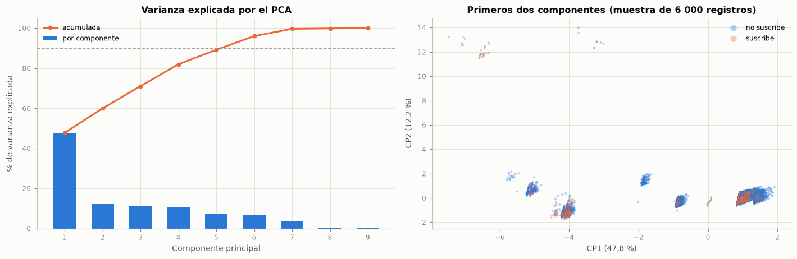
Lectura. El primer componente explica el 47,8 % de la varianza y está dominado por emp.var.rate, euribor3m, nr.employed y cons.price.idx: es el eje del ciclo económico del periodo. El segundo (12,2 %) lo forman sobre todo contacto_previo, log1p(previous) y age. Se necesitan 4, 6 y 6 componentes para el 80 %, 90 % y 95 % de la varianza, de 9 variables. La media del CP1 es -1,12 entre quienes suscriben y 0,08 entre quienes no, pero en el plano CP1–CP2 las clases se superponen mucho.
Implicación predictiva. La dimensionalidad efectiva es menor que el número de variables por la redundancia de las macro, lo que respalda la eliminación por VIF. La superposición de clases anticipa que ninguna frontera lineal las separará bien: el techo de desempeño de un modelo lineal es moderado.
Acción recomendada. No usar el PCA como entrada del modelo base (perdería interpretabilidad sin ganar información) y quedarse con la selección por VIF.
3.4.2 Atípicos multivariados (Mahalanobis e Isolation Forest)#
La distancia de Mahalanobis al cuadrado se compara con el cuantil 0,999 de una χ² con tantos grados de libertad como variables (la referencia es aproximada, porque las variables no son normales). Isolation Forest (random_state = SEED, 300 árboles, contaminación automática) no supone ninguna distribución.
cov_inv = np.linalg.pinv(np.cov(Zm, rowvar=False))
d2 = np.einsum("ij,jk,ik->i", Zm, cov_inv, Zm)
umbral_d2 = stats.chi2.ppf(0.999, df=Zm.shape[1])
atip_maha = d2 > umbral_d2
iso = IsolationForest(n_estimators=300, contamination="auto", random_state=SEED).fit(Zm)
puntaje_iso = iso.decision_function(Zm)
atip_iso = puntaje_iso < 0
ambos = atip_maha & atip_iso
yy = tr["y"].to_numpy()
atipicos_mv = pd.DataFrame({
"Registros": [int(atip_maha.sum()), int(atip_iso.sum()), int(ambos.sum())],
"% del entrenamiento": [100 * atip_maha.mean(), 100 * atip_iso.mean(), 100 * ambos.mean()],
"% que suscribe (atípicos)": [100 * yy[atip_maha].mean(), 100 * yy[atip_iso].mean(), 100 * yy[ambos].mean()],
"% que suscribe (resto)": [100 * yy[~atip_maha].mean(), 100 * yy[~atip_iso].mean(), 100 * yy[~ambos].mean()],
"% con contacto previo (atípicos)": [100 * M["contacto_previo"][atip_maha].mean(),
100 * M["contacto_previo"][atip_iso].mean(),
100 * M["contacto_previo"][ambos].mean()]},
index=["Mahalanobis (χ² 0,999)", "Isolation Forest", "Ambos métodos"])
tabla(atipicos_mv, dec=2)
jaccard = ambos.sum() / (atip_maha | atip_iso).sum()
fig, axs = plt.subplots(1, 2, figsize=(13, 3.8))
axs[0].hist(np.log10(d2 + 1e-9), bins=60, color=AZUL, edgecolor=FONDO, linewidth=0.3)
axs[0].axvline(np.log10(umbral_d2), color=NARANJA, lw=2)
axs[0].text(np.log10(umbral_d2) + 0.03, axs[0].get_ylim()[1] * 0.85, f"umbral χ² = {num(umbral_d2, 1)}",
color=TINTA_2, fontsize=8)
axs[0].set_xlabel("log10(distancia de Mahalanobis²)")
axs[0].set_ylabel("Registros")
axs[0].set_title("Distancia de Mahalanobis")
axs[1].hist(puntaje_iso, bins=60, color=AZUL, edgecolor=FONDO, linewidth=0.3)
axs[1].axvline(0, color=NARANJA, lw=2)
axs[1].text(0.02, 0.92, "puntaje < 0: anómalo", transform=axs[1].transAxes, color=TINTA_2, fontsize=8)
axs[1].set_xlabel("Puntaje de Isolation Forest (decision_function)")
axs[1].set_title("Isolation Forest")
plt.tight_layout()
plt.show()
interpretar(
f"Mahalanobis marca {num(int(atip_maha.sum()))} registros ({pct(atip_maha.mean())}) e Isolation Forest "
f"{num(int(atip_iso.sum()))} ({pct(atip_iso.mean())}); coinciden {num(int(ambos.sum()))} (Jaccard = "
f"{num(jaccard, 2)}). Entre los atípicos de Mahalanobis suscribe el "
f"{num(atipicos_mv.iloc[0]['% que suscribe (atípicos)'], 1)} % frente al "
f"{num(atipicos_mv.iloc[0]['% que suscribe (resto)'], 1)} % del resto, y el "
f"{num(atipicos_mv.iloc[0]['% con contacto previo (atípicos)'], 1)} % tuvo contacto previo.",
("Los atípicos multivariados no son errores: son sobre todo clientes con historial de campañas y contextos "
"económicos poco frecuentes, justamente donde la tasa de suscripción es distinta. "
if atipicos_mv.iloc[0]["% con contacto previo (atípicos)"] > 50 else
"Los atípicos multivariados corresponden a combinaciones poco frecuentes de valores plausibles, no a errores. ")
+ ("Eliminarlos quitaría información valiosa de la clase minoritaria."
if atipicos_mv.iloc[0]["% que suscribe (atípicos)"] > atipicos_mv.iloc[0]["% que suscribe (resto)"]
else "Su tasa de suscripción no es mayor que la del resto, pero tampoco hay razón para eliminarlos."),
"No eliminar atípicos multivariados; mantener la transformación `log1p` y el escalado para limitar su palanca.")
| Registros | % del entrenamiento | % que suscribe (atípicos) | % que suscribe (resto) | % con contacto previo (atípicos) | |
|---|---|---|---|---|---|
| Mahalanobis (χ² 0,999) | 430 | 1,31 | 32,33 | 6,03 | 40,47 |
| Isolation Forest | 13 021 | 39,53 | 8,85 | 4,75 | 1,34 |
| Ambos métodos | 430 | 1,31 | 32,33 | 6,03 | 40,47 |
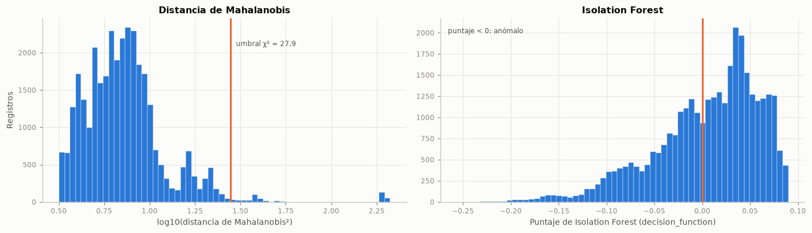
Lectura. Mahalanobis marca 430 registros (1,3 %) e Isolation Forest 13 021 (39,5 %); coinciden 430 (Jaccard = 0,03). Entre los atípicos de Mahalanobis suscribe el 32,3 % frente al 6,0 % del resto, y el 40,5 % tuvo contacto previo.
Implicación predictiva. Los atípicos multivariados corresponden a combinaciones poco frecuentes de valores plausibles, no a errores. Eliminarlos quitaría información valiosa de la clase minoritaria.
Acción recomendada. No eliminar atípicos multivariados; mantener la transformación log1p y el escalado para limitar su palanca.
3.4.3 Estructura de grupos (clustering exploratorio)#
Se explora si existen subpoblaciones con K-medias (random_state = SEED, 10 inicializaciones) sobre la misma matriz estandarizada, eligiendo k entre 2 y 6 con el coeficiente de silueta calculado en una muestra de 5 000 registros.
siluetas = {}
for k_ in range(2, 7):
km = KMeans(n_clusters=k_, n_init=10, random_state=SEED).fit(Zm)
siluetas[k_] = silhouette_score(Zm, km.labels_, sample_size=5000, random_state=SEED)
k_opt = max(siluetas, key=siluetas.get)
km = KMeans(n_clusters=k_opt, n_init=10, random_state=SEED).fit(Zm)
perfil = (pd.DataFrame({"cluster": km.labels_, "y": yy, "age": tr["age"].to_numpy(),
"euribor3m": tr["euribor3m"].to_numpy(), "contacto_previo": M["contacto_previo"].to_numpy(),
"anio_2008": (anio_tr.to_numpy() == 2008).astype(int)})
.groupby("cluster").agg(registros=("y", "size"), suscribe=("y", "mean"), edad_media=("age", "mean"),
euribor_media=("euribor3m", "mean"), contacto_previo=("contacto_previo", "mean"),
de_2008=("anio_2008", "mean")))
perfil["% del total"] = 100 * perfil["registros"] / len(tr)
for c in ["suscribe", "contacto_previo", "de_2008"]:
perfil[c] = 100 * perfil[c]
perfil = perfil.rename(columns={"suscribe": "% que suscribe", "contacto_previo": "% con contacto previo",
"de_2008": "% de 2008", "edad_media": "Edad media", "euribor_media": "Euribor media"})
fig, ax = plt.subplots(figsize=(6, 3.3))
ax.plot(list(siluetas), list(siluetas.values()), color=AZUL, marker="o")
ax.scatter([k_opt], [siluetas[k_opt]], color=NARANJA, s=60, zorder=3)
ax.set_xticks(list(siluetas))
ax.set_xlabel("Número de grupos (k)")
ax.set_ylabel("Silueta media")
ax.set_title("Selección de k por silueta")
plt.tight_layout()
plt.show()
tabla(perfil, dec=2)
descr_grupos = "; ".join(
f"grupo {g}: {num(r['% del total'], 1)} % de los registros, Euribor media de {num(r['Euribor media'], 2)} %, "
f"{num(r['% de 2008'], 1)} % de 2008, {num(r['% con contacto previo'], 1)} % con contacto previo y "
f"{num(r['% que suscribe'], 1)} % que suscribe" for g, r in perfil.iterrows())
interpretar(
f"La silueta es máxima con k = {k_opt} ({num(siluetas[k_opt], 3)}). Los perfiles son: {descr_grupos}. La edad "
f"media apenas cambia entre grupos (de {num(perfil['Edad media'].min(), 1)} a {num(perfil['Edad media'].max(), 1)} años).",
"Las subpoblaciones no son perfiles sociodemográficos sino combinaciones de **régimen económico** (antes y "
"después de la caída de la Euribor) e **historial de contacto**, con tasas de éxito muy distintas. Esto refuerza "
"que el periodo y el historial son los principales factores de variación y que un modelo evaluado al azar puede "
"apoyarse en el periodo.",
"No crear variables de grupo para el modelo base (repetirían la información del periodo) y verificar la fuga "
"temporal en la sección 3.6.")
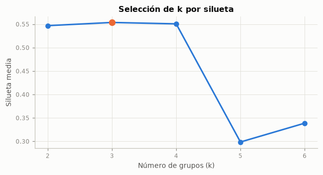
| registros | % que suscribe | Edad media | Euribor media | % con contacto previo | % de 2008 | % del total | |
|---|---|---|---|---|---|---|---|
| cluster | |||||||
| 0 | 27 637 | 4,83 | 40,19 | 4,82 | 0,00 | 100,00 | 83,90 |
| 1 | 174 | 37,93 | 41,17 | 1,92 | 100,00 | 20,11 | 0,53 |
| 2 | 5 129 | 13,63 | 39,10 | 1,39 | 0,00 | 0,19 | 15,57 |
Lectura. La silueta es máxima con k = 3 (0,554). Los perfiles son: grupo 0: 83,9 % de los registros, Euribor media de 4,82 %, 100,0 % de 2008, 0,0 % con contacto previo y 4,8 % que suscribe; grupo 1: 0,5 % de los registros, Euribor media de 1,92 %, 20,1 % de 2008, 100,0 % con contacto previo y 37,9 % que suscribe; grupo 2: 15,6 % de los registros, Euribor media de 1,39 %, 0,2 % de 2008, 0,0 % con contacto previo y 13,6 % que suscribe. La edad media apenas cambia entre grupos (de 39,1 a 41,2 años).
Implicación predictiva. Las subpoblaciones no son perfiles sociodemográficos sino combinaciones de régimen económico (antes y después de la caída de la Euribor) e historial de contacto, con tasas de éxito muy distintas. Esto refuerza que el periodo y el historial son los principales factores de variación y que un modelo evaluado al azar puede apoyarse en el periodo.
Acción recomendada. No crear variables de grupo para el modelo base (repetirían la información del periodo) y verificar la fuga temporal en la sección 3.6.
3.5 Auditoría de fuga de datos (enunciado, sección 2.5)#
3.5.1 Disponibilidad de cada variable en el momento de la predicción#
El momento de predicción es antes de realizar la llamada de la campaña actual. No hay identificadores ni variables derivadas de forma explícita de la variable objetivo.
Variable |
¿Disponible antes de la llamada? |
Justificación |
Decisión |
|---|---|---|---|
|
Sí |
Atributos del cliente registrados en el banco |
Usar |
|
Sí |
Situación crediticia registrada en el banco |
Usar |
|
Sí |
Canal por el que se hará la llamada |
Usar |
|
Sí |
Fecha programada de la llamada (sin año) |
Usar, en observación: |
|
No |
Solo se conoce al terminar la llamada; si vale 0, |
Descartar |
|
Parcial |
Cuenta los contactos de la campaña incluido el actual, así que se conoce antes de cada llamada; pero es razonable suponer que la campaña deja de llamar a quien ya suscribió, de modo que su valor puede depender del resultado |
Usar, en observación |
|
Sí |
Historial de campañas anteriores |
Usar |
Indicadores macroeconómicos |
Parcial |
Son públicos, pero los trimestrales y mensuales se publican con rezago: el valor del periodo en curso podría no conocerse el día de la llamada |
Usar las que deja el VIF, en observación (fuga temporal, sección 3.6) |
3.5.2 Desempeño univariado de cada variable#
Para cada predictora se ajusta una regresión logística con esa sola variable (codificación one-hot si es categórica) y se calcula el AUC promedio de los cinco pliegues de la validación temporal (sección 3). Un AUC cercano a 1 sería una alerta de fuga o de variable sustituta del objetivo.
def pipeline_auditoria(numericas, categoricas, C=1.0):
"""Instrumento de auditoría: escalado + one-hot + regresión logística (no es el modelo final)."""
pre = ColumnTransformer([("num", StandardScaler(), numericas),
("cat", OneHotEncoder(handle_unknown="ignore"), categoricas)])
return Pipeline([("pre", pre), ("lr", LogisticRegression(C=C, max_iter=5000))])
auc_uni = {}
for c in NUMERICAS + CATEGORICAS:
p_uni = pipeline_auditoria([c] if c in NUMERICAS else [], [c] if c in CATEGORICAS else [])
auc_uni[c] = cross_validate(p_uni, X_tr[[c]], y_tr, cv=tss, scoring="roc_auc")["test_score"].mean()
auc_uni = pd.Series(auc_uni).sort_values()
fig, ax = plt.subplots(figsize=(9, 5.2))
ax.barh(auc_uni.index, auc_uni.values, color=[GRIS if c == "duration" else AZUL for c in auc_uni.index], height=0.65)
ax.axvline(0.5, color=TINTA_2, lw=1)
ax.axvline(0.8, color=AMARILLO, ls="--", lw=1.2)
ax.axvline(0.9, color=ROJO, ls="--", lw=1.2)
ax.text(0.8, 1.005, "observación (0,8)", transform=ax.get_xaxis_transform(), ha="center", va="bottom",
fontsize=7.5, color=TINTA_2)
ax.text(0.9, 1.005, "alerta (0,9)", transform=ax.get_xaxis_transform(), ha="center", va="bottom", fontsize=7.5,
color=TINTA_2)
ax.set_xlim(min(0.4, auc_uni.min() - 0.03), 1.0)
ax.set_xlabel("AUC univariado promedio en validación temporal (entrenamiento)")
ax.set_title("Desempeño de cada variable por separado", pad=18)
for i, v in enumerate(auc_uni.values):
ax.text(v + 0.003, i, num(v, 3), va="center", fontsize=7.5, color=TINTA_2)
plt.tight_layout()
plt.show()
sin_dur = auc_uni.drop("duration")
alertas = auc_uni.index[auc_uni >= 0.9].tolist()
cerca_azar = sin_dur.index[sin_dur < 0.55].tolist()
interpretar(
(f"{enumerar(alertas)} alcanza el umbral de alerta de 0,9. " if alertas else
"Ninguna variable alcanza el umbral de alerta de 0,9. ")
+ f"La de mayor AUC es `{auc_uni.index[-1]}` ({num(auc_uni.iloc[-1], 3)}); sin ella, la mejor es "
f"`{sin_dur.index[-1]}` ({num(sin_dur.iloc[-1], 3)}), seguida de `{sin_dur.index[-2]}` ({num(sin_dur.iloc[-2], 3)}) y "
f"`{sin_dur.index[-3]}` ({num(sin_dur.iloc[-3], 3)}). {len(cerca_azar)} de las {len(sin_dur)} predictoras sin "
"`duration` quedan por debajo de 0,55.",
("El AUC univariado por sí solo no detecta la fuga de `duration`: su valor es alto pero no extremo. "
if auc_uni["duration"] < 0.9 else
"El AUC univariado de `duration` supera el umbral de alerta, lo que confirma su fuga. ")
+ "La fuga se identifica por la disponibilidad (sección 3.5.1) y por la ganancia que produce dentro del modelo "
"completo (sección 3.5.3). Con validación temporal, la mayoría de las predictoras ordena a los clientes del "
"periodo siguiente apenas mejor que el azar: su relación con `y` no se sostiene bien de un periodo a otro.",
"Descartar `duration` y mantener en observación las macro, `month` y `campaign`.")
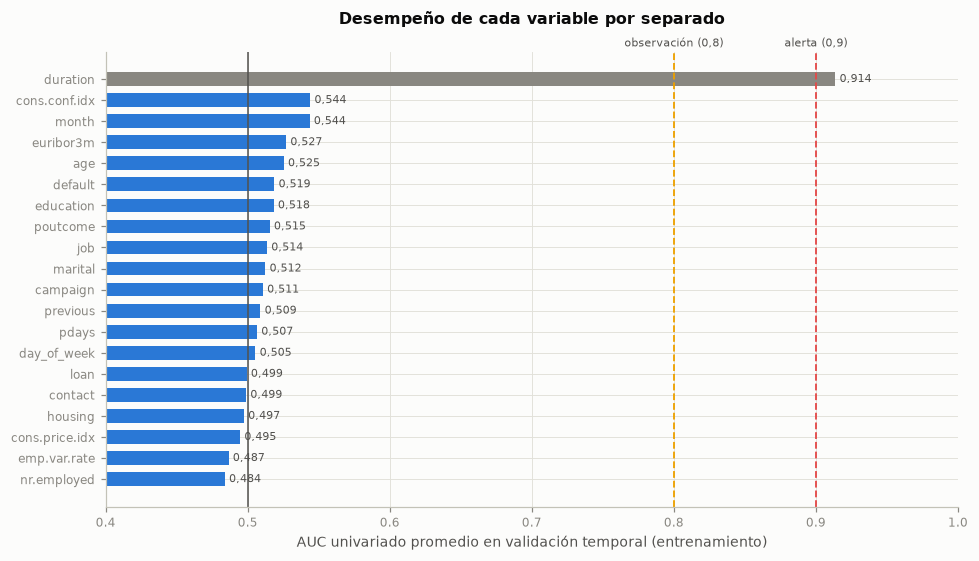
Lectura. duration alcanza el umbral de alerta de 0,9. La de mayor AUC es duration (0,914); sin ella, la mejor es cons.conf.idx (0,544), seguida de month (0,544) y euribor3m (0,527). 19 de las 19 predictoras sin duration quedan por debajo de 0,55.
Implicación predictiva. El AUC univariado de duration supera el umbral de alerta, lo que confirma su fuga. La fuga se identifica por la disponibilidad (sección 3.5.1) y por la ganancia que produce dentro del modelo completo (sección 3.5.3). Con validación temporal, la mayoría de las predictoras ordena a los clientes del periodo siguiente apenas mejor que el azar: su relación con y no se sostiene bien de un periodo a otro.
Acción recomendada. Descartar duration y mantener en observación las macro, month y campaign.
3.5.3 Efecto de duration en el modelo completo#
Se compara el AUC de la validación temporal (sección 3, solo entrenamiento) del instrumento de auditoría con todas las predictoras salvo duration y con duration incluida.
num_sin_dur = [c for c in NUMERICAS if c != "duration"]
cv_sin = cross_validate(pipeline_auditoria(num_sin_dur, CATEGORICAS), X_tr, y_tr, cv=tss,
scoring=["roc_auc", "average_precision"])
cv_con = cross_validate(pipeline_auditoria(NUMERICAS, CATEGORICAS), X_tr, y_tr, cv=tss,
scoring=["roc_auc", "average_precision"])
efecto_dur = pd.DataFrame({
"AUC media": [cv_sin["test_roc_auc"].mean(), cv_con["test_roc_auc"].mean()],
"AUC desv. est.": [cv_sin["test_roc_auc"].std(), cv_con["test_roc_auc"].std()],
"AUC-PR media": [cv_sin["test_average_precision"].mean(), cv_con["test_average_precision"].mean()]},
index=["Sin duration", "Con duration"])
tabla(efecto_dur, dec=3)
auc_sin_dur, auc_con_dur = efecto_dur["AUC media"]
interpretar(
f"Agregar `duration` sube el AUC de validación de {num(auc_sin_dur, 3)} a {num(auc_con_dur, 3)} y el AUC-PR de "
f"{num(efecto_dur.iloc[0, 2], 3)} a {num(efecto_dur.iloc[1, 2], 3)}.",
"Ese salto no es capacidad predictiva utilizable: proviene de una variable que se conoce cuando la llamada ya "
"terminó y, por tanto, cuando el resultado ya se sabe. Un modelo con `duration` sería inútil para decidir a "
"quién llamar y su desempeño reportado sería engañoso.",
"Excluir `duration` de forma definitiva; el AUC sin ella es la referencia honesta para el modelo base.")
| AUC media | AUC desv. est. | AUC-PR media | |
|---|---|---|---|
| Sin duration | 0,540 | 0,073 | 0,087 |
| Con duration | 0,856 | 0,084 | 0,401 |
Lectura. Agregar duration sube el AUC de validación de 0,540 a 0,856 y el AUC-PR de 0,087 a 0,401.
Implicación predictiva. Ese salto no es capacidad predictiva utilizable: proviene de una variable que se conoce cuando la llamada ya terminó y, por tanto, cuando el resultado ya se sabe. Un modelo con duration sería inútil para decidir a quién llamar y su desempeño reportado sería engañoso.
Acción recomendada. Excluir duration de forma definitiva; el AUC sin ella es la referencia honesta para el modelo base.
3.5.4 Duplicados y entidades repetidas entre entrenamiento y prueba#
Se verifica si hay registros de prueba cuyo vector de predictoras aparece también en entrenamiento: con las 20 predictoras (incluida duration) y con las 19 que usaría un modelo sin duration. No es posible verificar clientes repetidos porque no hay identificador (sección 1.5).
def huella(datos, columnas):
return pd.util.hash_pandas_object(datos[columnas], index=False)
h_tr20, h_te20 = huella(X_tr, NUMERICAS + CATEGORICAS), huella(X_te, NUMERICAS + CATEGORICAS)
h_tr19, h_te19 = huella(X_tr, PRED_SIN_DUR), huella(X_te, PRED_SIN_DUR)
rep20 = h_te20.isin(set(h_tr20)).to_numpy()
rep19 = h_te19.isin(set(h_tr19)).to_numpy()
# Concordancia de la etiqueta: y de prueba frente a la y mayoritaria del mismo perfil en entrenamiento
y_perfil_tr = pd.Series(y_tr.to_numpy(), index=h_tr19.to_numpy()).groupby(level=0).mean()
y_perfil = h_te19[rep19].map(y_perfil_tr).to_numpy()
concord = ((y_perfil >= 0.5).astype(int) == y_te.to_numpy()[rep19]).mean()
concord_mayoritaria = 1 - y_te.to_numpy()[rep19].mean()
en_corte = (periodo_te.to_numpy()[rep19] == periodo_corte).mean() if rep19.any() else 0.0
cruce = pd.DataFrame({
"Registros de prueba": [int(rep20.sum()), int(rep19.sum())],
"% de prueba": [100 * rep20.mean(), 100 * rep19.mean()]},
index=["Vector de 20 predictoras (con duration) presente en entrenamiento",
"Vector de 19 predictoras (sin duration) presente en entrenamiento"])
tabla(cruce, dec=2)
print(f"En los perfiles repetidos sin duration, la etiqueta de prueba coincide con la mayoritaria del perfil en "
f"entrenamiento en el {pct(concord)} de los casos (tasa de positivos en esos registros: "
f"{pct(y_te.to_numpy()[rep19].mean())}).")
interpretar(
f"Tras eliminar los duplicados exactos, {int(rep20.sum())} registros de prueba repiten el vector completo de "
f"entrenamiento. Sin `duration`, {num(int(rep19.sum()))} registros de prueba ({pct(rep19.mean(), 2)}) comparten "
f"perfil con alguno de entrenamiento, y su etiqueta coincide con la mayoritaria de ese perfil en el "
f"{pct(concord)} de los casos. El {pct(en_corte)} de esos registros pertenece a {periodo_corte}, el mes en que "
"cae el corte, porque solo ahí coinciden también los indicadores macroeconómicos.",
("Son tan pocos que no pueden inflar la evaluación: con la partición cronológica, los perfiles de prueba casi "
"nunca coinciden con los de entrenamiento, porque los indicadores macroeconómicos cambian entre periodos."
if rep19.sum() < 30 else
"Los perfiles compartidos son combinaciones frecuentes de atributos gruesos en el mismo periodo (mismas macro), "
f"no copias de un mismo contacto; su concordancia de etiqueta ({pct(concord)}) es "
+ ("similar a" if abs(concord - concord_mayoritaria) < 0.03 else ("mayor que" if concord > concord_mayoritaria else "menor que"))
+ f" la de predecir siempre la clase mayoritaria en esos registros ({pct(concord_mayoritaria)}) y representan solo "
f"el {pct(rep19.mean(), 2)} de la prueba, así que no inflan la evaluación de forma apreciable."),
"No hay fuga por duplicados que corregir; el riesgo relevante es el temporal, que se analiza a continuación.")
| Registros de prueba | % de prueba | |
|---|---|---|
| Vector de 20 predictoras (con duration) presente en entrenamiento | 0 | 0,00 |
| Vector de 19 predictoras (sin duration) presente en entrenamiento | 2 | 0,02 |
En los perfiles repetidos sin duration, la etiqueta de prueba coincide con la mayoritaria del perfil en entrenamiento en el 50,0 % de los casos (tasa de positivos en esos registros: 0,0 %).
Lectura. Tras eliminar los duplicados exactos, 0 registros de prueba repiten el vector completo de entrenamiento. Sin duration, 2 registros de prueba (0,02 %) comparten perfil con alguno de entrenamiento, y su etiqueta coincide con la mayoritaria de ese perfil en el 50,0 % de los casos. El 100,0 % de esos registros pertenece a 2009-05, el mes en que cae el corte, porque solo ahí coinciden también los indicadores macroeconómicos.
Implicación predictiva. Son tan pocos que no pueden inflar la evaluación: con la partición cronológica, los perfiles de prueba casi nunca coinciden con los de entrenamiento, porque los indicadores macroeconómicos cambian entre periodos.
Acción recomendada. No hay fuga por duplicados que corregir; el riesgo relevante es el temporal, que se analiza a continuación.
3.6 Orden temporal y verificación de fuga temporal (enunciado, secciones 2.5 y 2.6, alcance parcial)#
El archivo no tiene una variable de fecha completa, por lo que no se hace el análisis temporal completo de la sección 2.6 (descomposición, estacionariedad, ACF). Sí se documenta el orden temporal reconstruido (sección 1.5) y su efecto: la deriva entre periodos, cuánto del poder predictivo se explica solo por el periodo y la diferencia entre una validación aleatoria y una temporal. Este análisis, calculado solo dentro de entrenamiento, es la evidencia que respalda la partición cronológica (sección 2) y la validación temporal (sección 3).
3.6.1 Contexto económico y deriva entre periodos#
macro_periodo = tr.groupby(periodo_tr)[["euribor3m", "nr.employed"]].median()
fig, axs = plt.subplots(1, 2, figsize=(13, 3.6))
for ax, c, col in zip(axs, ["euribor3m", "nr.employed"], [AZUL, AGUAMARINA]):
ax.plot(np.arange(len(macro_periodo)), macro_periodo[c], color=col, marker="o", ms=4)
ax.set_xticks(np.arange(len(macro_periodo))[::2], macro_periodo.index[::2], rotation=60, ha="right")
ax.set_title(f"{c} (mediana por periodo)")
axs[0].set_ylabel("Euribor a 3 meses (%)")
axs[1].set_ylabel("Número de empleados")
plt.tight_layout()
plt.show()
despues = anio_tr >= 2009
deriva = []
for c in num_sin_dur:
ks = stats.ks_2samp(tr.loc[~despues, c], tr.loc[despues, c])
deriva.append({"Variable": c, "Medida": "KS", "Deriva": ks.statistic, "p": ks.pvalue})
for c in CATEGORICAS:
v, _, p = v_cramer(pd.crosstab(tr[c], despues))
deriva.append({"Variable": c, "Medida": "V de Cramér", "Deriva": v, "p": p})
deriva = pd.DataFrame(deriva).set_index("Variable")
deriva["p (Holm)"] = multipletests(deriva["p"], method="holm")[1]
deriva = deriva.drop(columns="p").sort_values("Deriva", ascending=False)
tabla(deriva, dec=3)
tasa_08, tasa_0910 = tr.loc[~despues, "y"].mean(), tr.loc[despues, "y"].mean()
tramo_despues = f"{periodo_tr[despues].iloc[0]} a {periodo_tr[despues].iloc[-1]}"
top_deriva = ", ".join(f"`{c}` ({r.Medida} = {num(r.Deriva, 2)})" for c, r in deriva.head(4).iterrows())
interpretar(
f"La Euribor pasa de una mediana de {num(macro_periodo['euribor3m'].iloc[0], 2)} % en {macro_periodo.index[0]} a "
f"{num(macro_periodo['euribor3m'].iloc[-1], 2)} % en {macro_periodo.index[-1]}. Entre 2008 y el tramo de 2009 "
f"incluido en entrenamiento ({tramo_despues}) la mayor deriva está en {top_deriva}, "
f"y la tasa de suscripción pasa del {pct(tasa_08)} al {pct(tasa_0910)}.",
"Hay deriva de covariables (*covariate shift*: cambian las macro, el canal y el historial) y deriva de la "
"prevalencia (la tasa base se multiplica). Un modelo entrenado con un periodo y aplicado en otro enfrenta "
"distribuciones distintas, y las macro le permiten reconocer el periodo cuando la validación es aleatoria.",
"Cuantificar el poder predictivo del periodo y comparar la validación aleatoria con la temporal.")
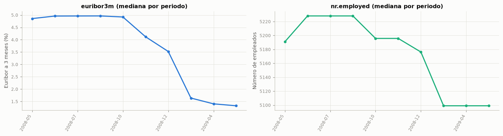
| Medida | Deriva | p (Holm) | |
|---|---|---|---|
| Variable | |||
| nr.employed | KS | 1,000 | 0,000 |
| cons.conf.idx | KS | 1,000 | 0,000 |
| emp.var.rate | KS | 1,000 | 0,000 |
| euribor3m | KS | 1,000 | 0,000 |
| cons.price.idx | KS | 1,000 | 0,000 |
| month | V de Cramér | 0,755 | 0,000 |
| poutcome | V de Cramér | 0,386 | 0,000 |
| contact | V de Cramér | 0,319 | 0,000 |
| previous | KS | 0,267 | 0,000 |
| campaign | KS | 0,122 | 0,000 |
| job | V de Cramér | 0,113 | 0,000 |
| day_of_week | V de Cramér | 0,097 | 0,000 |
| default | V de Cramér | 0,085 | 0,000 |
| age | KS | 0,082 | 0,000 |
| housing | V de Cramér | 0,050 | 0,000 |
| education | V de Cramér | 0,049 | 0,000 |
| marital | V de Cramér | 0,046 | 0,000 |
| pdays | KS | 0,025 | 0,015 |
| loan | V de Cramér | 0,010 | 0,173 |
Lectura. La Euribor pasa de una mediana de 4,86 % en 2008-05 a 1,33 % en 2009-05. Entre 2008 y el tramo de 2009 incluido en entrenamiento (2009-03 a 2009-05) la mayor deriva está en nr.employed (KS = 1,00), cons.conf.idx (KS = 1,00), emp.var.rate (KS = 1,00), euribor3m (KS = 1,00), y la tasa de suscripción pasa del 4,8 % al 14,5 %.
Implicación predictiva. Hay deriva de covariables (covariate shift: cambian las macro, el canal y el historial) y deriva de la prevalencia (la tasa base se multiplica). Un modelo entrenado con un periodo y aplicado en otro enfrenta distribuciones distintas, y las macro le permiten reconocer el periodo cuando la validación es aleatoria.
Acción recomendada. Cuantificar el poder predictivo del periodo y comparar la validación aleatoria con la temporal.
3.6.2 Validación aleatoria frente a validación temporal#
Se comparan tres resultados con el instrumento de auditoría (todas las predictoras salvo duration):
Validación estratificada aleatoria (cinco pliegues,
SEED): el contraste, es decir, lo que se habría obtenido ignorando el tiempo.Modelo que solo conoce el periodo (año-mes reconstruido, codificado one-hot), con la misma validación aleatoria: mide cuánto AUC se obtiene sin saber nada del cliente.
Validación temporal con
TimeSeriesSplity separación de un día (sección 3): siempre se ajusta con el pasado y se valida con el bloque siguiente.
Además, se calcula el AUC de las predicciones fuera de pliegue de la validación aleatoria dentro de cada año, que mide la capacidad de ordenar clientes del mismo periodo.
VARS_AUDIT_NUM, VARS_AUDIT_CAT = num_sin_dur, CATEGORICAS
modelo_aud = pipeline_auditoria(VARS_AUDIT_NUM, VARS_AUDIT_CAT)
oof_aud = cross_val_predict(modelo_aud, X_tr, y_tr, cv=skf, method="predict_proba")[:, 1]
cv_aleatoria = cross_validate(modelo_aud, X_tr, y_tr, cv=skf, scoring=["roc_auc", "average_precision"])
solo_periodo = make_pipeline(OneHotEncoder(handle_unknown="ignore"), LogisticRegression(max_iter=5000))
oof_periodo = cross_val_predict(solo_periodo, periodo_tr.to_frame(), y_tr, cv=skf, method="predict_proba")[:, 1]
auc_periodo = roc_auc_score(y_tr, oof_periodo)
filas_tss = []
for k_, (i_ent, i_val) in enumerate(tss.split(X_tr), start=1):
m_ = pipeline_auditoria(VARS_AUDIT_NUM, VARS_AUDIT_CAT).fit(X_tr.iloc[i_ent], y_tr.iloc[i_ent])
prob = m_.predict_proba(X_tr.iloc[i_val])[:, 1]
filas_tss.append({"Pliegue": k_, "Ajusta hasta": periodo_tr.iloc[i_ent[-1]],
"Valida desde": periodo_tr.iloc[i_val[0]], "Valida hasta": periodo_tr.iloc[i_val[-1]],
"% positivos (ajuste)": 100 * y_tr.iloc[i_ent].mean(),
"% positivos (validación)": 100 * y_tr.iloc[i_val].mean(),
"AUC": roc_auc_score(y_tr.iloc[i_val], prob),
"AUC-PR": average_precision_score(y_tr.iloc[i_val], prob)})
cv_tss = pd.DataFrame(filas_tss).set_index("Pliegue")
tabla(cv_tss, dec=3)
comparacion_val = pd.DataFrame({
"AUC media": [cv_aleatoria["test_roc_auc"].mean(), auc_periodo, cv_tss["AUC"].mean()],
"AUC mín.": [cv_aleatoria["test_roc_auc"].min(), np.nan, cv_tss["AUC"].min()],
"AUC máx.": [cv_aleatoria["test_roc_auc"].max(), np.nan, cv_tss["AUC"].max()],
"AUC-PR media": [cv_aleatoria["test_average_precision"].mean(),
average_precision_score(y_tr, oof_periodo), cv_tss["AUC-PR"].mean()]},
index=["Aleatoria estratificada (todas las predictoras)", "Aleatoria, solo el periodo (año-mes)",
"Temporal TimeSeriesSplit con separación (todas las predictoras)"])
tabla(comparacion_val, dec=3)
auc_por_anio = pd.Series({a: roc_auc_score(y_tr[anio_tr == a], oof_aud[(anio_tr == a).to_numpy()])
for a in sorted(anio_tr.unique())})
tabla(pd.DataFrame({"AUC fuera de pliegue dentro del año": auc_por_anio,
"Registros": anio_tr.value_counts().sort_index()}).rename_axis("Año"), dec=3)
fig, ax = plt.subplots(figsize=(8, 3.8))
ax.plot(np.arange(1, 6), cv_aleatoria["test_roc_auc"], color=AZUL, marker="o", label="aleatoria estratificada")
ax.plot(cv_tss.index, cv_tss["AUC"], color=NARANJA, marker="s", label="temporal (TimeSeriesSplit con separación)")
ax.axhline(auc_periodo, color=AGUAMARINA, ls="--", lw=1.5, label="solo el periodo (aleatoria)")
ax.axhline(0.5, color=GRIS, lw=1)
ax.set_xticks(range(1, 6))
ax.set_xlabel("Pliegue")
ax.set_ylabel("AUC de validación")
ax.set_ylim(0.35, 0.9)
ax.set_title("Validación aleatoria frente a temporal (entrenamiento)")
ax.legend(loc="lower right")
plt.tight_layout()
plt.show()
auc_alea = cv_aleatoria["test_roc_auc"].mean()
interpretar(
f"Con validación aleatoria el AUC es {num(auc_alea, 3)}; un modelo que solo conoce el año-mes logra "
f"{num(auc_periodo, 3)}, es decir, el {pct(auc_periodo / auc_alea, 0)} de ese valor sin ninguna información del "
f"cliente. Con validación temporal el AUC cae a {num(cv_tss['AUC'].mean(), 3)} en promedio (de "
f"{num(cv_tss['AUC'].min(), 3)} a {num(cv_tss['AUC'].max(), 3)})"
+ ((", con un pliegue por debajo de 0,5, es decir, peor que el azar" if (cv_tss["AUC"] < 0.5).sum() == 1 else
f", con {int((cv_tss['AUC'] < 0.5).sum())} pliegues por debajo de 0,5, es decir, peores que el azar")
if (cv_tss["AUC"] < 0.5).any() else "")
+ ". Dentro de cada año, el AUC de las predicciones aleatorias es de "
+ enumerar([f"{num(v, 3)} en {a}" for a, v in auc_por_anio.items()], codigo=False)
+ (", menor que el global en todos los años: parte del AUC aleatorio viene de distinguir periodos."
if (auc_por_anio < auc_alea).all() else
f"; en {enumerar([str(a) for a, v in auc_por_anio.items() if v < auc_alea], codigo=False)} es menor que el "
"global, señal de que parte del AUC aleatorio viene de distinguir periodos."
if (auc_por_anio < auc_alea).any() else "."),
"La evaluación aleatoria está inflada por **fuga temporal**: entrenamiento y validación comparten periodos, y "
"las macro y `month` permiten al modelo reconocer el periodo y su tasa base. Ese conocimiento no existe cuando "
"se predice una campaña futura, cuyo contexto y prevalencia aún no se han observado. La validación temporal "
"mide mejor el desempeño de uso real, aunque es variable porque los periodos son muy distintos entre sí.",
"Esta evidencia, obtenida solo con entrenamiento, respalda la partición cronológica (sección 2) y la validación "
"temporal (sección 3) como esquema principal; la validación aleatoria queda únicamente como contraste "
"(sección 4.10).")
| Ajusta hasta | Valida desde | Valida hasta | % positivos (ajuste) | % positivos (validación) | AUC | AUC-PR | |
|---|---|---|---|---|---|---|---|
| Pliegue | |||||||
| 1 | 2008-05 | 2008-05 | 2008-06 | 2,910 | 3,880 | 0,528 | 0,040 |
| 2 | 2008-06 | 2008-06 | 2008-07 | 3,409 | 6,047 | 0,565 | 0,073 |
| 3 | 2008-07 | 2008-07 | 2008-08 | 4,266 | 5,920 | 0,498 | 0,061 |
| 4 | 2008-08 | 2008-08 | 2008-11 | 4,727 | 5,446 | 0,446 | 0,052 |
| 5 | 2008-11 | 2008-11 | 2009-05 | 4,821 | 14,026 | 0,663 | 0,208 |
| AUC media | AUC mín. | AUC máx. | AUC-PR media | |
|---|---|---|---|---|
| Aleatoria estratificada (todas las predictoras) | 0,670 | 0,650 | 0,694 | 0,205 |
| Aleatoria, solo el periodo (año-mes) | 0,660 | — | — | 0,161 |
| Temporal TimeSeriesSplit con separación (todas las predictoras) | 0,540 | 0,446 | 0,663 | 0,087 |
| AUC fuera de pliegue dentro del año | Registros | |
|---|---|---|
| Año | ||
| 2008 | 0,582 | 27 682 |
| 2009 | 0,741 | 5 258 |
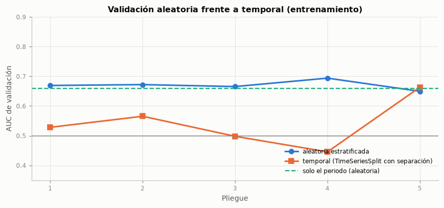
Lectura. Con validación aleatoria el AUC es 0,670; un modelo que solo conoce el año-mes logra 0,660, es decir, el 98 % de ese valor sin ninguna información del cliente. Con validación temporal el AUC cae a 0,540 en promedio (de 0,446 a 0,663), con 2 pliegues por debajo de 0,5, es decir, peores que el azar. Dentro de cada año, el AUC de las predicciones aleatorias es de 0,582 en 2008 y 0,741 en 2009; en 2008 es menor que el global, señal de que parte del AUC aleatorio viene de distinguir periodos.
Implicación predictiva. La evaluación aleatoria está inflada por fuga temporal: entrenamiento y validación comparten periodos, y las macro y month permiten al modelo reconocer el periodo y su tasa base. Ese conocimiento no existe cuando se predice una campaña futura, cuyo contexto y prevalencia aún no se han observado. La validación temporal mide mejor el desempeño de uso real, aunque es variable porque los periodos son muy distintos entre sí.
Acción recomendada. Esta evidencia, obtenida solo con entrenamiento, respalda la partición cronológica (sección 2) y la validación temporal (sección 3) como esquema principal; la validación aleatoria queda únicamente como contraste (sección 4.10).
3.7 Preprocesamiento (enunciado, sección 2.9)#
Todo el preprocesamiento se implementa dentro de un Pipeline de scikit-learn con un ColumnTransformer, de modo que cada parámetro (medianas, medias, desviaciones, categorías) se ajusta solo con los datos de entrenamiento de cada pliegue y luego se aplica sin cambios a validación y prueba. La tabla traza cada decisión al hallazgo del EDA que la motiva.
VARS_NUM = [c for c in NUMERICAS if c != "duration" and c not in NUM_RETIRADAS_VIF]
VARS_CAT = list(CATEGORICAS)
VARS_LOG = [c for c in ("campaign", "previous") if c in VARS_NUM]
VARS_ESCALA = [c for c in VARS_NUM if c not in VARS_LOG + ["pdays"]]
meses_ausentes_tr = [m for m in ORDEN_MESES if m not in set(X_tr["month"])]
decisiones = pd.DataFrame([
(f"Partición cronológica 80/20 y validación TimeSeriesSplit con separación de {GAP} registros",
f"Fuga temporal: AUC aleatorio de {num(auc_alea, 3)} frente a {num(cv_tss['AUC'].mean(), 3)} temporal; el periodo "
f"solo logra {num(auc_periodo, 3)}", "1.5, 2 y 3.6"),
("Excluir duration", "Solo se conoce después de la llamada; sube el AUC de "
f"{num(auc_sin_dur, 3)} a {num(auc_con_dur, 3)}", "3.5"),
(f"Excluir {enumerar(NUM_RETIRADAS_VIF, codigo=False)}",
f"VIF inicial de {enumerar([num(vif_inicial[c], 1) for c in NUM_RETIRADAS_VIF], codigo=False)}", "3.3.5"),
("unknown como categoría propia (sin imputar la moda ni eliminar filas)",
"Faltantes no MCAR e informativos; eliminarlos quitaría el " + pct(alguno.mean()) + " de los registros", "1.6.1 y 1.6.2"),
("pdays = 999 → faltante + indicador; imputación por la mediana (de entrenamiento)",
"999 es un código, no días; inconsistente con previous en " + num(inc_pdays) + " registros", "1.6.4"),
("log1p en " + enumerar(VARS_LOG, codigo=False), "Asimetría de " + enumerar([num(uni_num.loc[c, "Asimetría"], 1) for c in VARS_LOG], codigo=False)
+ " y atípicos legítimos de cola larga", "3.2.1 y 3.4.2"),
("Sin eliminar atípicos", "Son valores plausibles y concentran clientes con historial", "1.6.5 y 3.4.2"),
("Estandarización de todas las numéricas", "Escalas muy distintas (edad, índices, empleo) y penalización L2", "3.2.1"),
("One-hot con referencia (drop='first') para las categóricas",
"Variables nominales; la referencia facilita leer los odds ratios", "3.2.2"),
(f"Categorías con menos del {pct(MIN_FREQ)} agrupadas como infrecuentes; las no vistas en entrenamiento "
"van a la categoría infrecuente o a la de referencia",
f"{len(muy_raras)} categorías raras con coeficientes inestables; meses ausentes en entrenamiento: "
f"{enumerar(meses_ausentes_tr, codigo=False)}", "3.2.2"),
("Sin variables de periodo ni de clúster", "El periodo no se conoce hacia el futuro; los clústeres repiten el periodo",
"3.4.3 y 3.6"),
], columns=["Decisión", "Hallazgo del EDA que la motiva", "Sección"])
tabla(decisiones, indice=False)
| Decisión | Hallazgo del EDA que la motiva | Sección |
|---|---|---|
| Partición cronológica 80/20 y validación TimeSeriesSplit con separación de 507 registros | Fuga temporal: AUC aleatorio de 0,670 frente a 0,540 temporal; el periodo solo logra 0,660 | 1.5, 2 y 3.6 |
| Excluir duration | Solo se conoce después de la llamada; sube el AUC de 0,540 a 0,856 | 3.5 |
| Excluir euribor3m y emp.var.rate | VIF inicial de 46,2 y 45,4 | 3.3.5 |
| unknown como categoría propia (sin imputar la moda ni eliminar filas) | Faltantes no MCAR e informativos; eliminarlos quitaría el 26,0 % de los registros | 1.6.1 y 1.6.2 |
| pdays = 999 → faltante + indicador; imputación por la mediana (de entrenamiento) | 999 es un código, no días; inconsistente con previous en 4 110 registros | 1.6.4 |
| log1p en campaign y previous | Asimetría de 4,6 y 3,9 y atípicos legítimos de cola larga | 3.2.1 y 3.4.2 |
| Sin eliminar atípicos | Son valores plausibles y concentran clientes con historial | 1.6.5 y 3.4.2 |
| Estandarización de todas las numéricas | Escalas muy distintas (edad, índices, empleo) y penalización L2 | 3.2.1 |
| One-hot con referencia (drop='first') para las categóricas | Variables nominales; la referencia facilita leer los odds ratios | 3.2.2 |
| Categorías con menos del 0,5 % agrupadas como infrecuentes; las no vistas en entrenamiento van a la categoría infrecuente o a la de referencia | 5 categorías raras con coeficientes inestables; meses ausentes en entrenamiento: jan, feb y sep | 3.2.2 |
| Sin variables de periodo ni de clúster | El periodo no se conoce hacia el futuro; los clústeres repiten el periodo | 3.4.3 y 3.6 |
def pdays_a_nan(X):
"""Convierte el código 999 de pdays en faltante para imputarlo y marcarlo con un indicador."""
X = np.asarray(X, dtype=float).copy()
X[X == 999] = np.nan
return X
def construir_preprocesador(numericas=None, categoricas=None):
numericas = VARS_NUM if numericas is None else numericas
categoricas = VARS_CAT if categoricas is None else categoricas
escala = [c for c in numericas if c not in ("campaign", "previous", "pdays")]
logs = [c for c in ("campaign", "previous") if c in numericas]
pasos = [
("num", StandardScaler(), escala),
("log", make_pipeline(FunctionTransformer(np.log1p, feature_names_out="one-to-one"), StandardScaler()), logs),
("cat", OneHotEncoder(drop="first", min_frequency=MIN_FREQ, handle_unknown="infrequent_if_exist",
sparse_output=False), categoricas),
]
if "pdays" in numericas:
pasos.insert(2, ("pdays", make_pipeline(
FunctionTransformer(pdays_a_nan, feature_names_out="one-to-one"),
SimpleImputer(strategy="median", add_indicator=True, keep_empty_features=True),
StandardScaler()), ["pdays"]))
return ColumnTransformer(pasos)
def construir_modelo(C=1.0, numericas=None, categoricas=None):
return Pipeline([("pre", construir_preprocesador(numericas, categoricas)),
("lr", LogisticRegression(C=C, max_iter=5000))])
# En validación cronológica pueden aparecer meses no vistos; el codificador los envía a la categoría
# infrecuente (o a la referencia) por diseño, así que el aviso correspondiente se silencia.
warnings.filterwarnings("ignore", message="Found unknown categories")
pre_ajustado = construir_preprocesador().fit(X_tr, y_tr)
nombres_salida = pre_ajustado.get_feature_names_out()
codif = pre_ajustado.named_transformers_["cat"]
infrecuentes = {c: list(v) for c, v in zip(VARS_CAT, codif.infrequent_categories_) if v is not None}
print(pre_ajustado)
print(f"\nPredictoras de entrada: {len(VARS_NUM)} numéricas + {len(VARS_CAT)} categóricas = "
f"{len(VARS_NUM) + len(VARS_CAT)}")
print(f"Columnas tras el preprocesamiento: {len(nombres_salida)}")
print("Categorías agrupadas como infrecuentes (ajustadas en entrenamiento):", infrecuentes)
print(f"Mediana de pdays (sin 999) aprendida en entrenamiento: "
f"{pre_ajustado.named_transformers_['pdays'].named_steps['simpleimputer'].statistics_[0]:.0f} días")
cv_vif = {}
for nombre, numericas in [("Con todas las macro", [c for c in NUMERICAS if c != "duration"]),
("Sin las retiradas por VIF (modelo base)", VARS_NUM)]:
r = cross_validate(construir_modelo(numericas=numericas), X_tr, y_tr, cv=tss, scoring=["roc_auc", "average_precision"])
cv_vif[nombre] = {"AUC media": r["test_roc_auc"].mean(), "AUC desv. est.": r["test_roc_auc"].std(),
"AUC-PR media": r["test_average_precision"].mean()}
cv_vif = pd.DataFrame(cv_vif).T
tabla(cv_vif, dec=4)
perdida_vif = cv_vif.iloc[0]["AUC media"] - cv_vif.iloc[1]["AUC media"]
interpretar(
f"El preprocesamiento convierte {len(VARS_NUM) + len(VARS_CAT)} predictoras en {len(nombres_salida)} columnas "
f"(n/p efectivo = {num(len(X_tr) / len(nombres_salida), 0)}; {num(y_tr.sum() / len(nombres_salida), 0)} eventos por "
f"columna). Retirar {enumerar(NUM_RETIRADAS_VIF)} cambia el AUC de validación de "
f"{num(cv_vif.iloc[0]['AUC media'], 4)} a {num(cv_vif.iloc[1]['AUC media'], 4)} en la validación temporal "
f"(diferencia de {num(perdida_vif, 4)}; la desviación entre pliegues es de {num(cv_vif.iloc[1]['AUC desv. est.'], 4)}).",
("La eliminación por VIF no cuesta desempeño apreciable frente a la variabilidad entre pliegues y deja "
"coeficientes interpretables. " if abs(perdida_vif) < cv_vif.iloc[1]["AUC desv. est."] else
"La eliminación por VIF cambia el AUC más que la variabilidad entre pliegues; se mantiene por "
"interpretabilidad y se declara su costo. ")
+ "El número de eventos por columna es amplio, así que el riesgo de sobreajuste por dimensionalidad es bajo.",
"Usar este `Pipeline` como base del modelo de la sección 4, con el hiperparámetro de regularización elegido por "
"validación cruzada.")
ColumnTransformer(transformers=[('num', StandardScaler(),
['age', 'cons.price.idx', 'cons.conf.idx',
'nr.employed']),
('log',
Pipeline(steps=[('functiontransformer',
FunctionTransformer(feature_names_out='one-to-one',
func=<ufunc 'log1p'>)),
('standardscaler',
StandardScaler())]),
['campaign', 'previous']),
('pdays',
Pipeline(steps=[('functiontransformer',
Function...
('simpleimputer',
SimpleImputer(add_indicator=True,
keep_empty_features=True,
strategy='median')),
('standardscaler',
StandardScaler())]),
['pdays']),
('cat',
OneHotEncoder(drop='first',
handle_unknown='infrequent_if_exist',
min_frequency=0.005,
sparse_output=False),
['job', 'marital', 'education', 'default',
'housing', 'loan', 'contact', 'month',
'day_of_week', 'poutcome'])])
Predictoras de entrada: 7 numéricas + 10 categóricas = 17
Columnas tras el preprocesamiento: 49
Categorías agrupadas como infrecuentes (ajustadas en entrenamiento): {'marital': ['unknown'], 'education': ['illiterate'], 'default': ['yes'], 'month': ['dec', 'oct']}
Mediana de pdays (sin 999) aprendida en entrenamiento: 5 días
| AUC media | AUC desv. est. | AUC-PR media | |
|---|---|---|---|
| Con todas las macro | 0,5345 | 0,0573 | 0,0855 |
| Sin las retiradas por VIF (modelo base) | 0,5374 | 0,0753 | 0,0961 |
Lectura. El preprocesamiento convierte 17 predictoras en 49 columnas (n/p efectivo = 672; 43 eventos por columna). Retirar euribor3m y emp.var.rate cambia el AUC de validación de 0,5345 a 0,5374 en la validación temporal (diferencia de -0,0029; la desviación entre pliegues es de 0,0753).
Implicación predictiva. La eliminación por VIF no cuesta desempeño apreciable frente a la variabilidad entre pliegues y deja coeficientes interpretables. El número de eventos por columna es amplio, así que el riesgo de sobreajuste por dimensionalidad es bajo.
Acción recomendada. Usar este Pipeline como base del modelo de la sección 4, con el hiperparámetro de regularización elegido por validación cruzada.